연료계통(Fuel System)은 모든 비행 상태에서 엔진에 깨끗한 연료를 정확한 양과 압력으로 공급해야 한다.The fuel system must supply the engine with clean fuel at the correct quantity and pressure under all flight conditions.
고도·자세·온도 변화, 급가속·급감속에서도 연속 공급이 보장되어야 한다.Continuous delivery must be assured even during changes in altitude, attitude, and temperature, and during rapid acceleration or deceleration.
베이퍼락(Vapor lock, 연료증기에 의한 공급 차단) 방지가 핵심 설계 요소다.Preventing vapor lock (interruption of fuel flow caused by fuel vapor) is a key design factor.
- A. 엔진당 엔진 구동 연료 펌프 하나와 보조 펌프 하나.An engine-driven fuel pump and at least one auxiliary pump per engine.
- B. 모든 엔진으로 가는 연료를 차단하는 양압 수단(positive means of shutting off the fuel to all engines).A positive means of shutting off the fuel to all engines.
- C. 비행 승무원이 선택한 후에만 사용 가능한 예비 연료 공급.A reserve supply of fuel, available to the engine only after selection by the flightcrew, sufficient to operate the engines at least 30 minutes at METO power.
- A. 배선 아래에 두고 라인을 기체 구조에 단단히 클램프(below the wiring and clamp the line securely to the airframe structure).below the wiring and clamp the line securely to the airframe structure.
- B. 배선 위에 두고 라인을 기체 구조에 단단히 클램프.above the wiring and clamp the line securely to the airframe structure.
- C. 배선 안쪽에 두고 둘 다 기체 구조에 단단히 클램프.inboard of the wiring and clamp both securely to the airframe structure.
- A. 너무 빠른 연소 완료.too rapid completion of combustion.
- B. 불완전 연소(incomplete combustion).incomplete combustion.
- C. 불완전 실린더 스캐빈징.incomplete cylinder scavenging.
기본 구성: 연료탱크(Tank) → 연료펌프(Fuel pump) → 필터(Filter) → 연료계량장치(Metering device) → 엔진.Basic arrangement: fuel tank → fuel pump → filter → metering device → engine.
왕복엔진은 기화기(Carburetor) 또는 연료분사(Fuel injection)로 연료를 계량한다.Reciprocating engines meter fuel with either a carburetor or fuel injection.
연료압력·유량 게이지로 상태를 감시한다.Fuel pressure and flow gauges monitor the system.
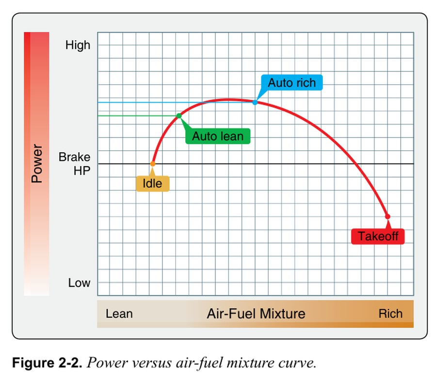
- A. 아이들 혼합기 과농후Idle mixture too rich.
- B. 디리치먼트 밸브 막힘Clogged derichment valve.
- C. 희박 혼합기Lean mixture.
- A. 과도하게 희박한 혼합기an excessively lean mixture.
- B. 과도하게 분무된 연료excessively atomized fuel.
- C. 과도하게 농후한 혼합기an excessively rich mixture.
기화기는 벤투리(Venturi) 효과를 이용한다 — 공기 통로가 좁아지면 유속이 빨라지고 압력이 낮아져 연료가 빨려 나온다.A carburetor uses the venturi effect: where the air passage narrows, the air speeds up and its pressure drops, drawing fuel out.
공연비(Air-Fuel Ratio)는 약 15:1(중량비)이 이론 최적이며, 운전 상태에 따라 농후(Rich)/희박(Lean)으로 조절된다.The air-fuel ratio of about 15:1 by weight is the theoretical optimum, adjusted rich or lean according to operating conditions.
기화(Vaporization) 과정에서 공기온도가 내려가 결빙(Icing)이 생길 수 있다.During vaporization the air temperature drops, which can cause icing.
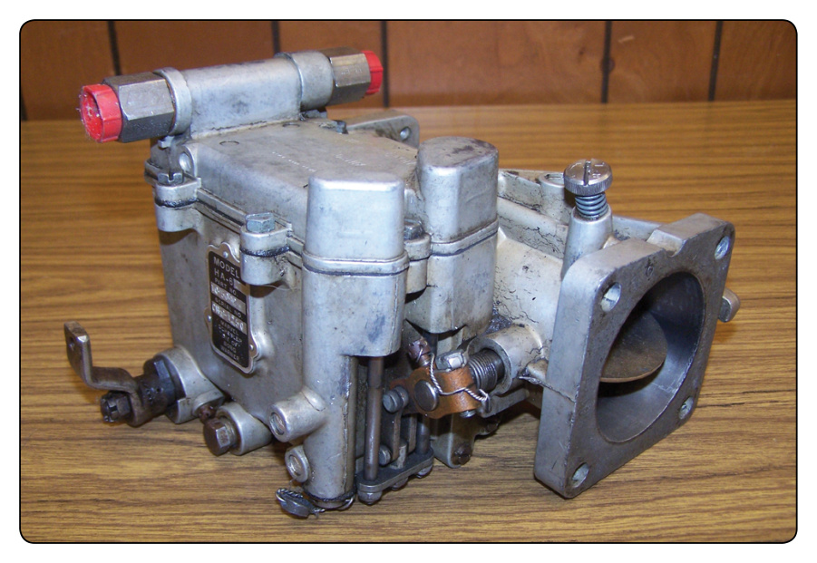
- A. 건조 공기 75 + 수증기 25.75 parts of dry air and 25 parts of water vapor.
- B. 건조 공기 100(100 parts of dry air).100 parts of dry air.
- C. 건조 공기 50 + 수증기 50.50 parts of dry air and 50 parts of water vapor.
- A. 너무 빨리 연소할 때(burns too fast).burns too fast.
- B. 정상 점화 시점 전에 점화될 때.ignites before the time of normal ignition.
- C. 너무 농후할 때.is too rich.
- A. 일정 RPM·매니폴드압에서 엔진출력 감소Decreased engine power at a constant RPM and manifold pressure.
- B. 체적효율 증가로 출력 증가Increased power output due to increased volumetric efficiency.
- C. 비자동 기화기 엔진에 희박 효과A leaning effect on engines which use non-automatic carburetors.
항공가솔린 (Avgas)
Aviation Gasoline항공가솔린(Avgas)은 자동차용 가솔린보다 엄격한 규격을 따른다. 주요 특성은 발열량(heat energy content), 증기압(vapor pressure), 임계 압력·온도(critical pressure & temperature), 그리고 안티노크 성능(옥탄가)이다.Aviation gasoline meets stricter specifications than automotive gasoline. Key properties are heat energy content, vapor pressure, critical pressure and temperature, and anti-knock performance (octane rating).
증기압이 너무 높으면 연료가 쉽게 기화하여 베이퍼 록(vapor lock)을 일으키고, 너무 낮으면 시동·가속이 어렵다. 그래서 항공연료는 증기압이 좁은 범위로 규정된다.If vapor pressure is too high, the fuel vaporizes easily and causes vapor lock; if too low, starting and acceleration are difficult. So aviation fuel vapor pressure is held within a narrow range.
연료 등급(grade)은 색으로 구분한다: 80(적색), 100(녹색), 100LL(청색, 저납). 지정된 등급보다 낮은 연료를 쓰면 디토네이션이 발생할 수 있고, 항상 같거나 더 높은 등급으로 대체해야 한다.Fuel grades are color-coded: 80 (red), 100 (green), 100LL (blue, low-lead). Using a lower grade than specified can cause detonation; always substitute with the same or a higher grade.
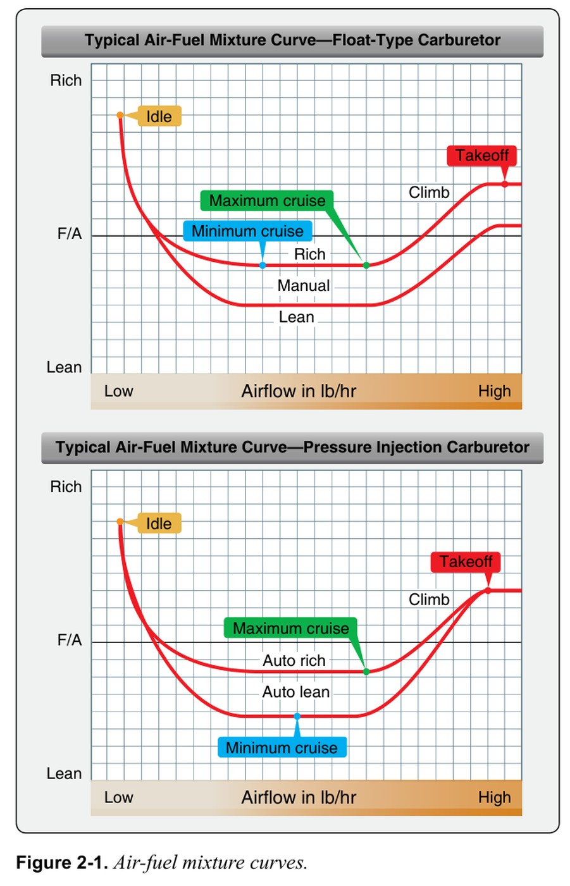
디토네이션과 조기점화
Detonation & Preignition디토네이션(detonation)은 압축된 연료-공기 혼합기가 정상 화염전파 대신 순간적으로 폭발하는 현상이다. 충격파가 실린더에 심한 충격력을 가해 엔진 손상을 일으킨다. 낮은 옥탄가 연료, 과도한 흡기온도, 과희박 혼합비, 높은 출력에서 발생하기 쉽다.Detonation is the instantaneous explosion of the compressed charge instead of a normal flame front. The shock waves severely stress the cylinder and damage the engine. It is likely with low-octane fuel, high induction temperature, an over-lean mixture, or high power.
조기점화(preignition)는 점화플러그가 점화하기 전에 실린더 내부의 과열점(글로잉 카본·뜨거운 배기밸브)이 혼합기를 미리 점화하는 현상이다. 디토네이션과 달리 점화 시점 자체가 빨라지는 것이며, 둘은 서로를 유발할 수 있다.Preignition is when a hot spot inside the cylinder (glowing carbon or a hot exhaust valve) ignites the charge before the spark plug fires. Unlike detonation, the ignition timing itself is advanced, and the two can cause each other.
- A. 거짓 낮은 배기가스 온도 측정.false low exhaust gas temperature reading.
- B. 엔진 오버스피드를 일으키는 트림 설정.trim setting resulting in engine overspeed.
- C. 거짓 높은 압축·터빈 토출 압력과 결과적으로 낮은 트림(false high compression and turbine discharge pressure, and a subsequent low trim).false high compression and turbine discharge pressure, and a subsequent low trim.
기화기는 여러 회로로 구성된다: 주계량회로(Main metering), 완속회로(Idling), 가속펌프(Accelerating pump), 혼합비조절(Mixture control), 출력증강(Power enrichment).A carburetor has several circuits: main metering, idling, accelerating pump, mixture control, and power enrichment.
각 회로가 운전 영역별로 적절한 공연비를 만든다.Each circuit provides the proper air-fuel ratio for its operating range.
초크(Choke)/프라이머(Primer)는 시동 시 농후 혼합기를 공급한다.The choke or primer supplies a rich mixture for starting.
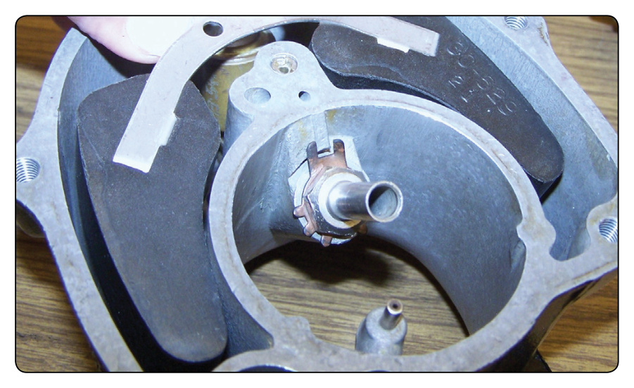
- A. 고고도에서 희박.lean at high altitudes.
- B. 고고도에서 농후(rich at high altitudes).rich at high altitudes.
- C. 고속에서 농후.rich at high speeds.
- A. HOT/COLD 양쪽에서 다이버터밸브 스톱 도달 전에 컨트롤레버 스톱 도달before the stop at the control lever is reached in both HOT and COLD positions.
- B. HOT에서는 컨트롤레버 스톱 후, COLD에서는 다이버터밸브 스톱 후before the stop at the control lever is reached in the HOT position and after the stop at the control lever is reached in the COLD position.
- C. HOT/COLD 양쪽에서 컨트롤레버 스톱 도달 후 다이버터밸브 스톱after the stop at the control lever is reached in both HOT and COLD positions.
결빙 종류: 연료증발빙(Fuel evaporation ice), 스로틀빙(Throttle ice), 충돌빙(Impact ice).Types of icing: fuel evaporation ice, throttle ice, and impact ice.
연료증발빙이 가장 흔하며, 외기 0~21°C·습도 높을 때 위험하다.Fuel evaporation ice is the most common and is most dangerous at outside temperatures of 0–21°C with high humidity.
대책: 카뷰레터 히트(Carburetor heat)로 따뜻한 공기를 공급한다.Remedy: carburetor heat supplies warm air to melt and prevent the ice.
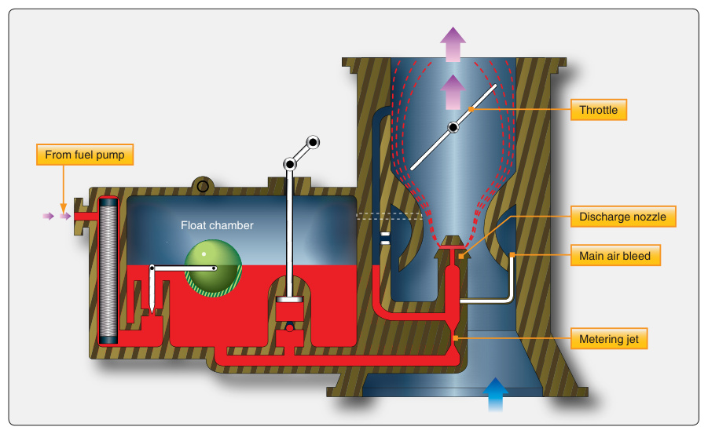
- A. 옥탄가가 너무 높은 연료 사용.The use of too high an octane rating fuel.
- B. 불완전한 연료 기화(Incomplete fuel vaporization).Incomplete fuel vaporization.
- C. 기화기 공기 히터 밸브가 HOT 위치.The carburetor air heater valve in the HOT position.
- A. 공기 밀도가 증가.air density is increased.
- B. 습도가 증가(humidity is increased).humidity is increased.
- C. 매니폴드 압력이 증가.manifold pressure is increased.
플로트식(Float-type)은 가장 일반적인 기화기로, 플로트(Float)와 니들밸브(Needle valve)로 연료 수위를 일정하게 유지한다.The float-type is the most common carburetor; a float and needle valve keep the fuel level constant.
구성: 플로트실(Float chamber), 메인노즐(Main discharge nozzle), 벤투리, 스로틀밸브(Throttle valve).Parts: float chamber, main discharge nozzle, venturi, and throttle valve.
단점: 자세 변화·중력가속도(G)에 민감하고 결빙에 약하다.Drawbacks: it is sensitive to changes in attitude and g-loading and is prone to icing.
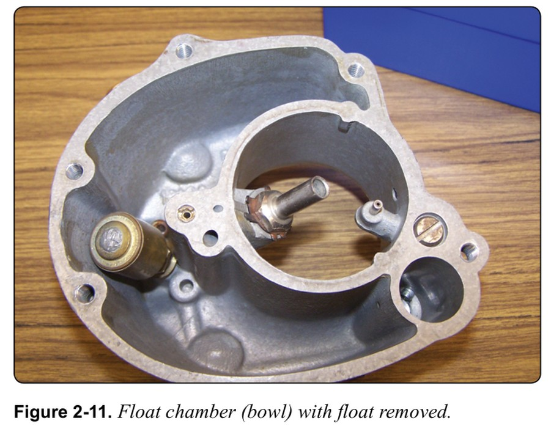
- A. 엔진을 데우고 작동시킨 상태에서 조정(adjusted with engine warmed up and operating).is adjusted with engine warmed up and operating.
- B. 최대 매니폴드 압력으로 최소 RPM을 주어야 함.should give minimum RPM with maximum manifold pressure.
- C. 보통 혼합 먼저, 속도 나중 순서로 조정.is usually adjusted in the following sequence; speed first, then mixture.
- A. 1, 2, 3, 8, 9번(1, 2, 3, 8, and 9).1, 2, 3, 8, and 9.
- B. 모든 실린더.All cylinders.
- C. 1, 3, 5, 7번.1, 3, 5, and 7.
- A. 공연비 압력 비율 변화.Changes in air-fuel pressure ratio.
- B. 연료 유량계.Fuel flowmeter.
- C. RPM 또는 매니폴드 압력 변화(Changes in RPM or manifold pressure).Changes in RPM or manifold pressure.
- A. 엔진이 정지하기 전 약간 감소하고 RPM이 약간 상승.decreases momentarily and RPM drops slightly before the engine ceases to fire.
- B. 엔진이 정지하기 전 약간 증가하고 RPM이 약간 상승.increases momentarily and RPM drops slightly before the engine ceases to fire.
- C. 감소하고 엔진이 정지하기 전 RPM이 순간적으로 증가(decreases and RPM increases momentarily before the engine ceases to fire).decreases and RPM increases momentarily before the engine ceases to fire.
- A. 즉각적 RPM 감소.an immediate decrease in RPM.
- B. 정지 전 20~30 RPM 감소.a decrease of 20 to 30 RPM before quitting.
- C. 감소 전 10~50 RPM 증가(an increase of 10 to 50 RPM before decreasing).an increase of 10 to 50 RPM before decreasing.
- A. 엔진을 데우고 플로트 레벨을 조정.warm up the engine and adjust the float level.
- B. 아이들 혼합 설정은 조정하지 않음(플로 벤치에서 완료됨).do not adjust the idle mixture setting; this was accomplished on the flow bench.
- C. 엔진을 정상 온도로 데우고 아이들 혼합, 그다음 아이들 속도를 조정(adjust the idle mixture, then the idle speed).and the engine is warmed up to normal temperatures, adjust the idle mixture, then the idle speed.
- A. 공연비를 일정하게 유지.keeps the air-fuel ratio constant.
- B. 순항·아이들 속도에서만 작동.functions only at cruise and idle speeds.
- C. 고출력 설정에서 공연비를 증가(농후하게)(increases the air-fuel ratio at high power settings).increases the air-fuel ratio at high power settings.
- A. 첫 나사산에만 윤활제를 바름.Put the thread lubricant only on the first thread.
- B. 어떤 기화기 피팅에도 나사 윤활제를 쓰지 않음.Do not use thread lubricant on any carburetor fitting.
- C. 플러그 첫 나사산을 끼운 뒤 둘째 나사산에 소량 윤활제를 바르고 플러그를 조임(Engage the first thread of the plug, then put a small amount of lubricant on the second thread and screw the plug in).Engage the first thread of the plug, then put a small amount of lubricant on the second thread and screw the plug in.
메인 계량계통
Main Metering System메인 계량계통(main metering system)은 순항 출력 범위에서 연료-공기 비를 제어한다. 벤투리 목의 저압과 임팩트 튜브의 고압 차이가 '공기 계량력(air metering force)'을 만들어, 흡입 공기량에 비례해 연료를 계량한다.The main metering system controls the fuel-air ratio in the cruise power range. The difference between low pressure at the venturi throat and high pressure from impact tubes creates an air metering force that meters fuel in proportion to airflow.
스로틀을 열면 공기 계량력이 커지고 서보(포핏) 밸브가 더 열려 메인 계량 제트를 지나는 연료 차압과 유량이 증가한다. 메인 에어블리드(main air bleed)는 연료에 공기를 섞어 무화(atomization)를 돕고 저속·고속 전 영역에서 적정 혼합비를 유지한다.Opening the throttle increases the air metering force, opening the servo (poppet) valve further so more fuel flows across the main metering jet. The main air bleed mixes air into the fuel to aid atomization and maintain proper mixture across the speed range.
아이들링·가속 계통
Idling & Acceleration System아이들링 계통(idling system)은 공기 흐름이 적어 메인 계량계통이 안정적으로 작동하지 못하는 저속에서 연료를 공급한다. 스로틀로 제어되는 아이들 밸브가 살짝 열려 공회전 혼합비(약 10% 출력까지)를 조절하며, 외부에서 조정할 수 있다.The idling system supplies fuel at low speed when airflow is too small for the main metering system to work stably. A throttle-controlled idle valve opens slightly to control the idle mixture (up to about 10% power) and is adjustable from outside.
가속 계통(acceleration system)은 스로틀을 급히 열 때 일시적인 혼합기 희박을 막는다. 가속 펌프(accelerator pump)가 매니폴드 압력 변화에 따라 추가 연료를 분사 노즐로 밀어내, 메인 계량 흐름이 따라잡을 때까지 즉각적인 연료 증량을 제공한다.The acceleration system prevents a momentary lean condition when the throttle is opened suddenly. The accelerator pump, responding to manifold pressure change, forces extra fuel to the discharge nozzle, providing an immediate fuel increase until the main metering catches up.
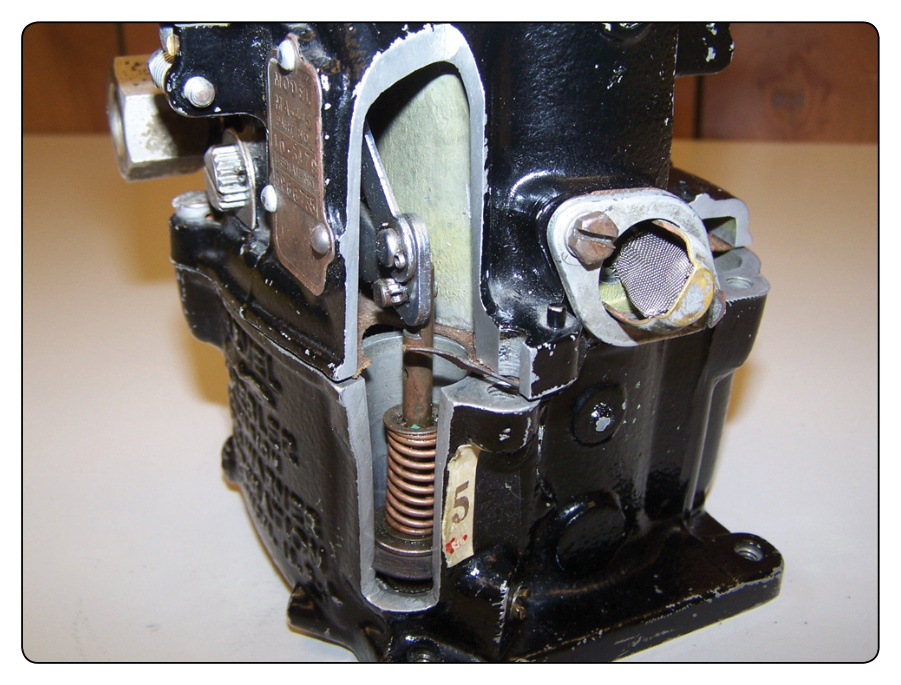
혼합비 조절계통
Mixture Control System압력분사식 기화기는 수동(manual)과 자동(automatic) 혼합비 조절을 모두 갖는다. 수동 조절기는 조종실에서 제어하는 니들 밸브로, A·B 챔버 사이 공기 흐름을 조절해 혼합비를 바꾼다. IDLE CUTOFF 위치에서는 연료를 완전히 차단해 엔진을 정지시킨다.A pressure carburetor has both manual and automatic mixture control. The manual control is a cockpit-operated needle valve that varies airflow between chambers A and B to change the mixture. In IDLE CUTOFF it shuts off all fuel and stops the engine.
자동 혼합비 조절기(AMC)는 벨로즈(bellows)가 대기압 변화를 감지한다. 해수면(고압)에서는 벨로즈가 수축해 혼합기를 농후하게, 고도가 올라가 기압이 낮아지면 벨로즈가 팽창해 혼합기를 희박하게 자동 조정한다.The automatic mixture control (AMC) uses a bellows that senses atmospheric pressure. At sea level (high pressure) the bellows contracts for a rich mixture; as altitude increases and pressure drops, the bellows expands to automatically lean the mixture.
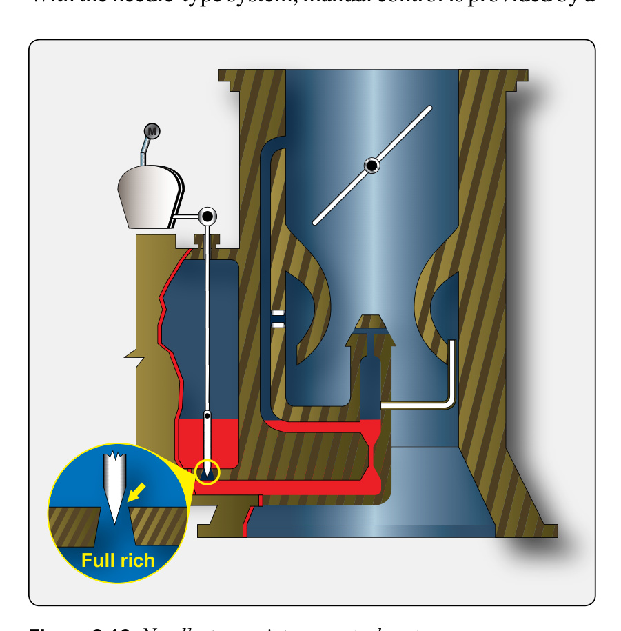
- A. 농후해진다(be enriched).be enriched.
- B. 희박해진다.be leaned.
- C. 영향받지 않는다.not be affected.
- A. 희박해진다.It will become leaner.
- B. 고도가 변할 때까지 변화 없음.No change will occur until the altitude changes.
- C. 농후해진다(It will become richer).It will become richer.
출력증강(이코노마이저) 계통
Power Enrichment / Economizer System출력증강 계통(power-enrichment system) 또는 이코노마이저(economizer)는 고출력 작동 시 추가 연료를 공급한다. 메인 계량 제트와 병렬로 설치된 출력증강 밸브가, 스로틀이 거의 완전히 열렸을 때 높은 조절 연료압력으로 열려 추가 연료를 분사 밸브로 보낸다.The power-enrichment (economizer) system adds extra fuel at high power. A power-enrichment valve, in parallel with the main metering jet, opens under high regulated fuel pressure when the throttle is nearly wide open, sending additional fuel to the discharge valve.
이 추가 연료는 고출력에서 실린더를 냉각해 디토네이션을 방지한다. 순항 같은 경제 출력에서는 밸브가 닫혀 연료를 절약하므로 '이코노마이저'라 부른다.This extra fuel cools the cylinders at high power to prevent detonation. At economy (cruise) power the valve is closed to save fuel — hence the name economizer.
압력분사식(Pressure injection)은 연료를 가압 분사해 플로트식의 자세·결빙 단점을 개선했다.The pressure-injection type sprays fuel under pressure, overcoming the attitude and icing drawbacks of the float type.
공기·연료 압력차를 이용한 다이어프램(Diaphragm) 방식으로 정밀 계량한다.It meters precisely with a diaphragm system that uses the pressure difference between air and fuel.
곡예비행·고고도 운용에 유리하다.It is well suited to aerobatic and high-altitude operation.
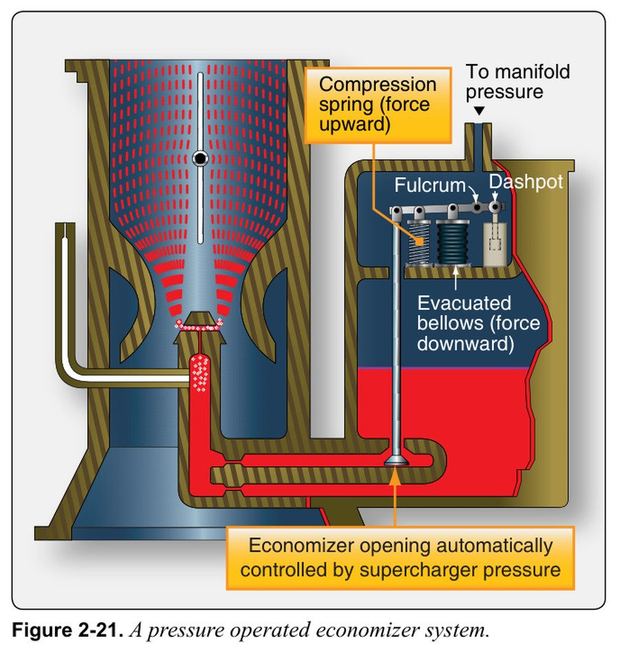
연료분사(Fuel injection)는 각 실린더 흡기포트에 직접 연료를 분사한다 — 기화기보다 분배 균일·결빙 없음.Fuel injection sprays fuel directly into each cylinder's intake port — giving more even distribution than a carburetor and no icing.
구성: 엔진구동 연료펌프, 연료/공기 제어유닛(Fuel-air control unit), 연료매니폴드밸브(Manifold valve), 분사노즐(Injector nozzle).Parts: engine-driven fuel pump, fuel-air control unit, fuel manifold valve, and injector nozzles.
Continental·Bendix(RSA) 방식이 대표적이다.The Continental and Bendix (RSA) systems are representative.
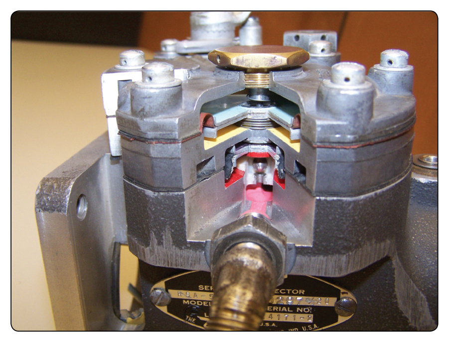
가스터빈 연료계통은 광범위한 출력·고도 범위에서 정밀한 연료스케줄을 제공해야 한다.A gas turbine fuel system must provide a precise fuel schedule over a wide range of power and altitude.
핵심: 연료조절장치(FCU: Fuel Control Unit) 또는 전자식 엔진제어(EEC/FADEC)가 연료량을 결정한다.Key point: a Fuel Control Unit (FCU) or electronic engine control (EEC/FADEC) determines the fuel quantity.
연료흐름: 부스트펌프 → 주연료펌프 → FCU/FADEC → 연료노즐 → 연소실.Fuel flow: boost pump → main fuel pump → FCU/FADEC → fuel nozzles → combustor.
- A. 모든 액세서리 블리드 에어를 끔(turn all accessory bleed air off).turn all accessory bleed air off.
- B. 모든 액세서리 블리드 에어를 켬.turn all accessory bleed air on.
- C. 같은 항공기의 모든 엔진에 대해 블리드 에어 설정을 동일하게 맞춤.make adjustments (as necessary) for all engines on the same aircraft with accessory bleed air settings the same—either on or off.
- A. 프레셔라이제이션 밸브 닫힘, 덤프 밸브 열림(Pressurization valve closed, dump valve open).Pressurization valve closed, dump valve open.
- B. 프레셔라이제이션 밸브 열림, 덤프 밸브 열림.Pressurization valve open, dump valve open.
- C. 프레셔라이제이션 밸브 닫힘, 덤프 밸브 닫힘.Pressurization valve closed, dump valve closed.
주연료펌프(Main fuel pump)는 보통 기어식(Gear-type) 정용량 펌프로 고압을 만든다.The main fuel pump is usually a gear-type, positive-displacement pump that produces high pressure.
릴리프밸브(Relief valve)로 과압을 제어하고, 잉여연료는 펌프 입구로 환류한다.A relief valve controls overpressure, and excess fuel returns to the pump inlet.
부스트펌프(Boost pump)는 베이퍼락 방지와 시동 시 공급을 담당한다.A boost pump prevents vapor lock and supplies fuel for starting.
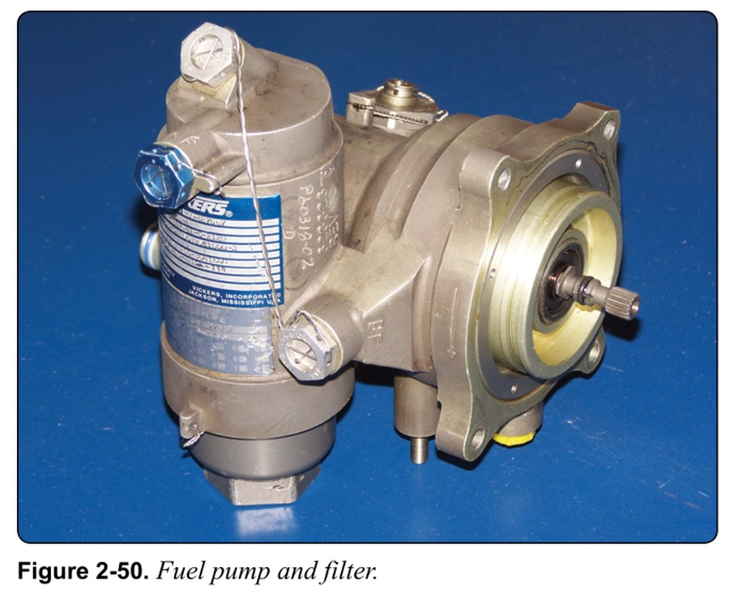
- A. 프라이머 솔레노이드 내부 펌프.internal pump in the primer solenoid.
- B. 메인 디스차지 노즐의 흡입.suction at the main discharge nozzle.
- C. 부스터 펌프(booster pump).booster pump.
주요 부품: 연료필터/스트레이너(Filter), 연료히터(Fuel heater, 결빙방지), 연료유량계(Flow meter), 연료차단밸브(Shutoff valve).Main parts: fuel filter/strainer, fuel heater (anti-icing), fuel flow meter, and fuel shutoff valve.
연료매니폴드(Manifold)가 연료를 각 노즐로 분배한다.A fuel manifold distributes fuel to each nozzle.
연료/오일 냉각기(Fuel-oil cooler)는 오일을 식히고 연료를 데우는 이중기능을 한다.A fuel-oil cooler serves a dual function, cooling the oil while warming the fuel.
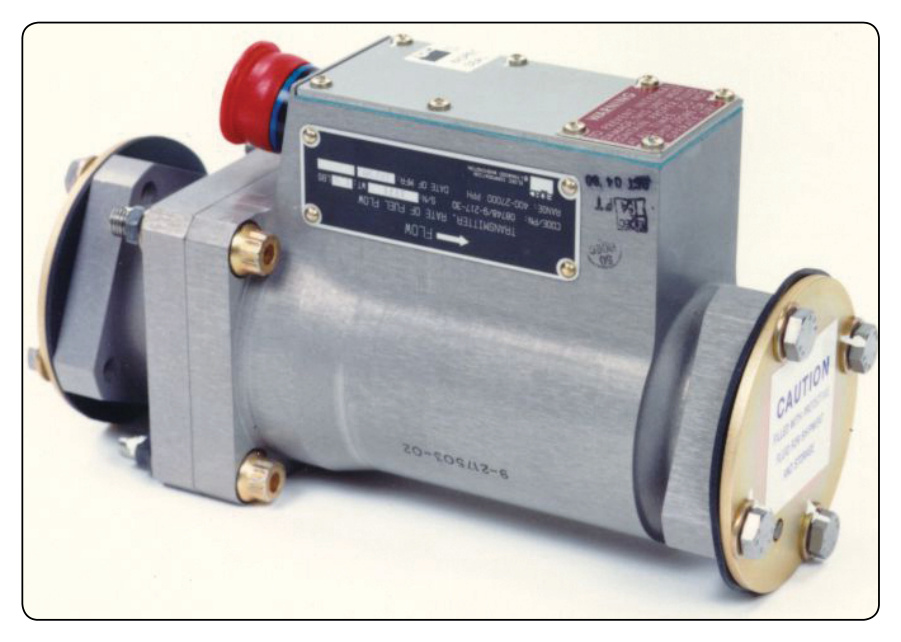
- A. 공연비를 농후하게.enrich the air-fuel mixture.
- B. 물 분사(water injection) 사용.use water injection.
- C. 공연비를 희박하게.lean the air-fuel mixture.
- A. 연료 계통의 최고점.At the highest point in the fuel system.
- B. 연료 계통의 최저점(At the lowest point in the fuel system).At the lowest point in the fuel system.
- C. 기화기 입구 챔버.At the inlet chamber of the carburetor.
- A. 지역 FAA 안전 검사관.The local FAA safety inspector.
- B. 엔진의 형식증명자료집(Type Certificate Data Sheets).The Type Certificate Data Sheets for the engine.
- C. 제작사 권고(manufacturer's recommendations).The manufacturer's recommendations.
기화기 오버홀·정비
Carburetor Overhaul & Maintenance14 CFR Part 43 부록 A는 압력분사식 기화기 오버홀을 '기기 대수리(appliance major repair)'로 분류한다. 적절한 오버홀과 교정에는 특수 공구·장비가 필요하며, 보통 제작사나 FAA 인가 전문 수리소에서 수행한다.14 CFR Part 43 Appendix A classifies pressure carburetor overhaul as an appliance major repair. Proper overhaul and calibration require special tools and equipment, normally done by the manufacturer or an FAA-approved repair station.
오버홀 후 연료 챔버는 방청유(preservative oil)로 채워져 있으므로 엔진 시동 전에 제거해야 한다. 기화기 장착·연료라인 연결 후 부스트 펌프로 방청유를 퍼지하고, 다이어프램 유연성 회복을 위해 시동 전 최소 8시간 연료에 담가두는 것이 권장된다.After overhaul the fuel chambers are filled with preservative oil that must be removed before running. After installation, purge the oil with the boost pump; soaking the carburetor in fuel for at least 8 hours before starting is recommended to restore diaphragm pliability.
RSA 연료분사 계통 정비는 최초 25시간, 이후 매 50시간마다 연료 스트레이너를 청소한다. 스트레이너는 반드시 연료공급라인 쪽에서 분리해야 하며, 블록오프 플러그 쪽에서 빼면 오염물이 계통으로 유입되어 오작동을 일으킨다.RSA fuel injection maintenance includes cleaning the fuel strainer after the first 25 hours and every 50 hours after. The strainer must be removed from the fuel-supply-line end; removing it from the block-off plug end lets contaminants enter the system and cause malfunction.
연료노즐(Fuel nozzle)은 연소실에 연료를 미세하게 분무(Atomize)해 효율적 연소를 돕는다.The fuel nozzle atomizes fuel finely into the combustor for efficient combustion.
형식: 단식(Simplex), 복식(Duplex), 공기분무식(Airblast).Types: simplex, duplex, and airblast.
노즐 막힘·분무패턴 불량은 연소불안정·핫스팟(Hot spot)을 유발한다.A clogged nozzle or poor spray pattern causes combustion instability and hot spots.
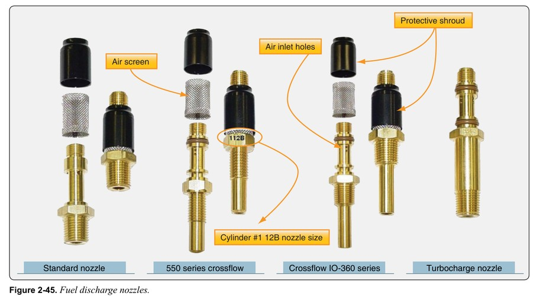
연료분사 노즐 (에어블리드형)
Fuel Injection Nozzle (Air Bleed Type)현대 항공기 연료분사 계통(RSA 등)은 직접분사가 아니라, 각 실린더 흡기밸브 바로 바깥에 설치된 노즐로 저압 연료를 연속 분사하는 연속흐름(continuous-flow) 방식이다.Modern aircraft fuel injection systems (such as RSA) are not direct injection but continuous-flow systems that deliver low-pressure fuel continuously to nozzles installed just outside each cylinder's intake valve.
에어블리드형 노즐은 흡기밸브가 닫혀 있을 때 노즐 중앙 챔버에 연료가 모이고, 밸브가 열리면 저압이 연료와 에어블리드 구멍의 공기를 함께 끌어들여 공기-연료 에멀전 형태로 실린더에 공급한다. 실린더 헤드 열이 즉시 연료를 기화시켜 균일한 연료 증기를 공급한다.With an air-bleed nozzle, fuel collects in the nozzle's center chamber when the intake valve is closed; when it opens, low pressure draws fuel together with air from the air-bleed holes into the cylinder as an air-fuel emulsion. Cylinder head heat immediately vaporizes the fuel for a uniform charge.
터보차저 엔진은 아이들 이상에서 주변 기압이 부족해 연료가 노즐 공기구멍으로 새어나갈 수 있으므로, 압축기 토출의 어퍼덱 공기(upper-deck air)를 노즐 슈라우드로 보내 연료와 확실히 혼합되게 한다.On turbocharged engines, insufficient ambient pressure above idle could let fuel flow out the nozzle air vents, so upper-deck air from the compressor discharge is routed into the nozzle shrouds to ensure positive mixing with fuel.
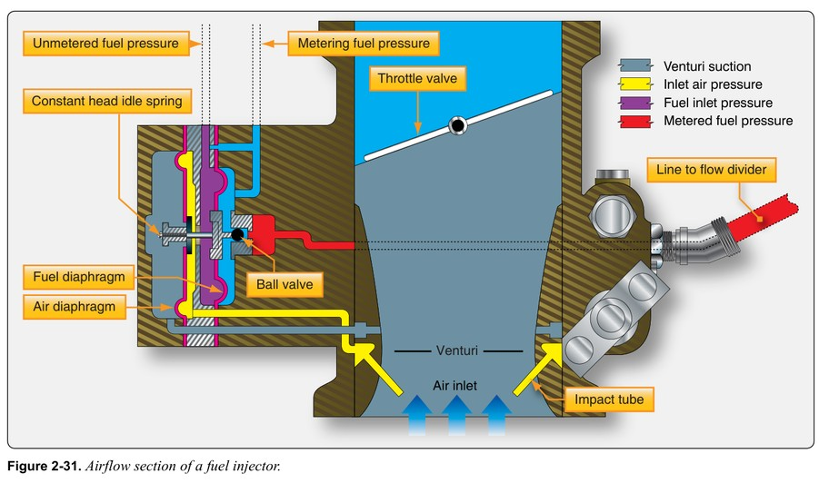
연료 저장·공급 요건과 연료 라인 심화 📙 Jeppesen 정독
Fuel Storage, Delivery Requirements, and Fuel Lines항공기 연료 계통은 두 가지 기본 섹션 — 기체(airframe)와 파워플랜트(powerplant) — 로 나뉩니다. 기체 섹션은 저장·공급과 관련한 모든 부품, 즉 연료 탱크부터 엔진 구동 펌프까지를 포함합니다. 파워플랜트 섹션은 엔진 구동 연료 펌프 이후부터 시작해 공기와 연료가 연소를 위해 혼합되는 지점(기화기 내부, 또는 실린더·터빈 엔진의 연소실)에서 끝나는 분배 부품으로 구성됩니다. 연료 계통의 유일한 목적은 엔진에 연료를 공급하는 것입니다.An aircraft fuel system has two basic sections—airframe and powerplant. The airframe section includes all parts for storage and delivery, from the tanks to the engine-driven pump. The powerplant section is the distribution parts, beginning after the engine-driven pump and ending where air and fuel mix for combustion (inside a carburetor, or in a cylinder or turbine combustion chamber). The system's sole purpose is to supply fuel to the engine(s).
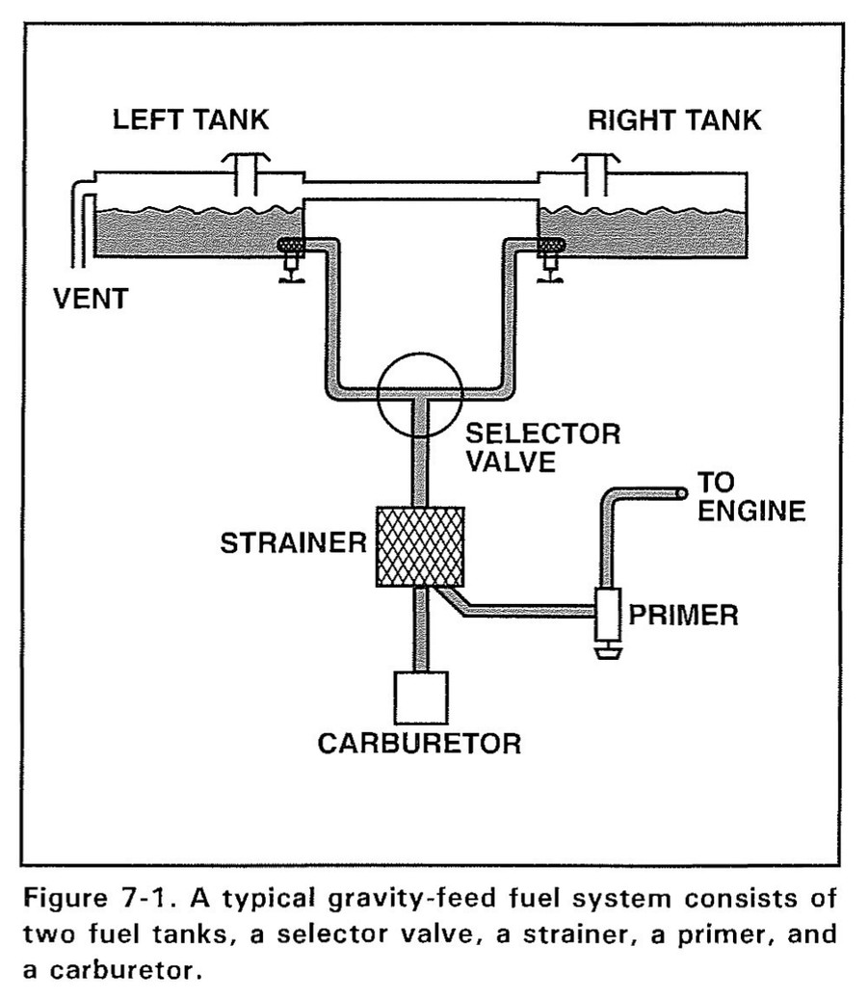
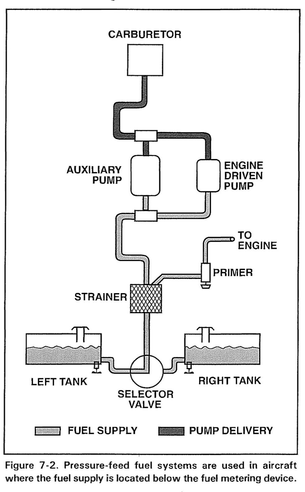
미국에서 인증·등록된 항공기의 연료 계통은 연방항공규정(FAR) 14 CFR Part 23의 특정 작동 요건을 충족해야 합니다. 주요 요건으로, 모든 예상 작동 조건에서 엔진과 보조동력장치(APU)가 제대로 작동하도록 정해진 유량·압력으로 연료가 흐르게 설계·배치되어야 합니다(FAR 23.951). 어떤 펌프도 한 번에 둘 이상의 탱크에서 연료를 끌어올 수 없도록 배치하거나, 공기가 연료 공급 라인으로 흡입되는 것을 막는 조치를 해야 합니다(FAR 23.951). 터빈 동력 항공기는 화씨 80도에서 갤런당 0.75세제곱센티미터의 유리수(free water)를 포함해도 지속 작동할 수 있어야 하며, 연료가 결빙에 가장 취약한 상태로 냉각되어도 엔진이 지속 작동할 수 있어야 합니다(FAR 23.951).Fuel systems on US-certified aircraft must meet FAR 14 CFR Part 23 requirements. Key ones: fuel must flow at a rate and pressure ensuring proper engine and APU function under all likely conditions (23.951); no pump may draw from more than one tank at a time, or air must be prevented from entering the supply line (23.951); turbine aircraft must sustain operation with 0.75 cc of free water per gallon at 80°F and with fuel cooled to its most critical icing condition (23.951).
다발(multiengine) 항공기의 연료 계통은 한 부품(연료 탱크 제외)의 고장이 둘 이상 엔진의 출력 손실을 일으키거나 조종사의 즉각 조치를 요구하지 않도록 배치되어야 합니다(FAR 23.953). 정상 카테고리 항공기의 각 엔진에는 비행 중 연료를 신속히 차단할 방법이 제공되어야 하며, 엔진 연료 차단 밸브는 방화벽의 엔진 쪽에 위치할 수 없습니다(FAR 23.995). 모든 필러 캡은 잘못 장착되거나 비행 중 분실될 가능성이 낮게 설계되어야 하고(FAR 23.953), 연료 계통은 낙뢰에 의한 연료 증기 점화를 방지하도록 설계되어야 합니다(FAR 23.954). 중력 공급(gravity-feed) 계통의 유량은 최소 허용 연료 상태에서 이륙 유량의 150퍼센트여야 하며, 펌프 공급 계통은 각 왕복엔진에 대해 요구 이륙 유량의 125퍼센트여야 합니다(FAR 23.955).On multiengine aircraft, one component's failure (except a tank) must not cause loss of power in more than one engine or require immediate pilot action (23.953). Normal-category aircraft need a way to rapidly shut off fuel to each engine in flight, and the shutoff valve cannot be on the engine side of a firewall (23.995). Filler caps must be unlikely to be misinstalled or lost in flight (23.953), and the system must prevent lightning ignition of fuel vapors (23.954). Gravity-feed flow must be 150 percent of takeoff flow at minimum fuel, and pump-feed flow 125 percent of required takeoff flow per reciprocating engine (23.955).
규정은 연료 탱크가 통기(vent)되고 연료 팽창을 위한 충분한 공간을 갖도록 요구합니다. 통기는 탱크 가압을 막고 엔진으로 공급되는 연료를 공기가 대체하도록 합니다. 연료 벤트가 부분적·완전히 막히면 연료가 소비되면서 탱크 내에 저압 구역이 형성되어 결국 연료 흐름이 줄거나 멈춥니다. 특히 고출력 설정에서 엔진이 충분한 연료를 받지 못하면 막힌 벤트가 원인일 수 있습니다. 급유 중 연료가 항공기 내부로 들어가는 것을 막기 위해 탱크 필러 넥 근처에 스커퍼(scupper)와 드레인을 설치하기도 하는데, 스커퍼가 넘친 연료를 모아 기외 드레인으로 보냅니다. 스커퍼 드레인이 막히면 필러 캡을 열 때 물과 오염물이 탱크로 들어갈 수 있습니다.Regulations require tanks to be vented with adequate expansion space. Venting prevents pressurization and lets air replace fuel sent to the engine; a blocked vent forms low pressure as fuel is used, eventually reducing or stopping flow—often the cause when an engine is starved at high power. A scupper and drain near the filler neck catch refueling overflow and route it overboard; if the scupper drain clogs, water and contaminants can enter the tank when the cap is removed.
연료 라인 라우팅에는 여러 요건이 있습니다. 연료 라인은 다른 계통과 분리해 배선하되, 불가능하면 연료 라인을 전기 배선 아래에 설치하고 배선은 기체에 고정하며, 배선 다발을 연료 라인에 절대 클램프하지 않습니다. 강성 튜브는 약간의 정렬 오차·진동과 온도·압력 변화에 따른 팽창·수축을 흡수하도록 최소 한 번의 굽힘을 두어야 합니다. 모든 금속 연료 라인은 각 구조 부착점에서 본딩·쿠션 클램프로 본딩하고, 정비 중 손잡이로 쓰이지 않도록 보호하며, 사람·화물에 의한 손상을 막게 격실 상단·측면으로 배선하고, 급격한 곡선·상승·하강을 피해 베이퍼 록(vapor lock)을 방지합니다.Fuel-line routing has several requirements: route lines separate from other systems, or install below electrical wiring (with wiring attached to the airframe—never clamp a wiring bundle to a fuel line). Rigid tubing needs at least one bend to absorb misalignment, vibration, and thermal expansion/contraction. Bond all metal lines at each structural attachment with bonded, cushioned clamps, protect them from being used as handholds, route them along tops/sides of compartments to avoid damage, and avoid sharp curves and steep rises/falls to prevent vapor lock.
현대 항공기의 플렉시블 연료 라인은 네오프렌·테플론 같은 합성재로 만든 호스로, 내구성과 내화학성 때문에 사용됩니다. 화재 위험을 줄이기 위해 라인 위에 내화 장치를 설치할 수 있는데, 화이어 슬리브(fire sleeve)는 실리콘 코팅 유리섬유 관으로 제작 시 설치되어 스테인리스 밴드로 호스 양단에 고정됩니다. 화이어 슬리브는 귀중한 보호를 제공하지만 호스 검사를 어렵게 하므로 제조사 권장 교체 주기를 따라야 합니다. 플렉시블 라인은 구부릴 수 있으나 비틀면 안 되며, 비틀림은 부품을 약화시키고 원래 형태로 돌아가려는 토크가 진동과 결합해 끝 피팅을 풀리게 합니다. 비틀림 식별을 위해 대부분 호스에는 레이 라인(lay line)이 있어, 올바로 설치되면 이 선이 나선이 아닌 직선으로 나타납니다.Modern flexible fuel lines are Neoprene or Teflon hoses chosen for durability and chemical resistance. A fire sleeve—silicone-coated fiberglass tubing secured with stainless bands—can be added to reduce fire risk, but it hinders inspection, so follow replacement intervals. Flexible lines may be bent but not twisted; twisting weakens them, and the torque plus vibration loosens end fittings. Most hoses have a lay line that runs straight (not spiraled) when properly installed to reveal twisting.
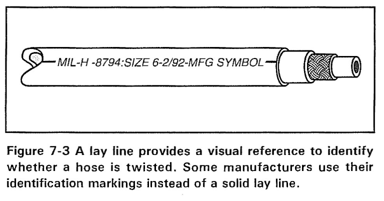
- A. 방화벽 뒤(Aft of the firewall).Aft of the firewall.
- B. 연료 펌프 인접.Adjacent to the fuel pump.
- C. 엔진 구동 연료 펌프 하류.Downstream of the engine-driven fuel pump.
- A. 베이퍼 록 방지(prevent vapor lock).prevent vapor lock.
- B. 연료 라인 내 연료의 정체·고임 방지.prevent stagnation or “pooling” of fuel in the fuel lines.
- C. 유체 마찰을 줄여 정전기 발생을 최소화.minimize the generation of static electricity by decreasing fluid friction in the lines.
- A. 엔진 이륙 연료 소비량의 125%.125 percent of the takeoff fuel consumption of the engine.
- B. 이륙 제외 최대 엔진 연료 소비량의 125%.125 percent of the maximum, except takeoff, fuel consumption of the engine.
- C. 엔진 이륙 연료 소비량의 150%(150 percent of the takeoff fuel consumption of the engine).150 percent of the takeoff fuel consumption of the engine.
- A. 리퀴드 록.liquid lock.
- B. 베이퍼 록(vapor lock).vapor lock.
- C. 포지티브 록.positive lock.
- A. 연료 탱크 퍼지.purge the fuel tanks.
- B. 비상 시 연료 투기.jettison fuel in an emergency.
- C. 항공기 안정성 유지(maintain aircraft stability).maintain aircraft stability.
- A. 기화기 스로틀 스톱이 조종석 스톱보다 먼저 닿아야 함(throttle stop on the carburetor must be contacted before the stop in the flight deck).The throttle stop on the carburetor must be contacted before the stop in the flight deck.
- B. 조종석 스톱이 기화기 스톱보다 먼저 닿아야 함.The stop in the flight deck must be contacted before the stop on the carburetor.
- C. 어느 스톱도 닿지 않을 때 스로틀 컨트롤이 올바로 조정됨.The throttle control is properly adjusted when neither stop makes contact.
- A. 이코노마이저 밸브.Economizer valve.
- B. 자동 혼합 조절.Automatic mixture control.
- C. 벤투리(Venturi).Venturi.
- A. 가속 펌프(Acceleration pump).Acceleration pump.
- B. 엔진 구동 연료 펌프.Engine-driven fuel pump.
- C. 출력 증강 유닛.Power enrichment unit.
![Figure 6]()
- A. 1번.1.
- B. 3번.3.
- C. 2번(Curve 2).2.
- A. 강풍·고습.High wind and high moisture.
- B. 고습·저풍.High moisture and low wind.
- C. 무풍·저습(No wind and low moisture).No wind and low moisture.
강성 라인·연료 필터와 엔진 구동 연료 펌프 심화 📙 Jeppesen 정독
Rigid Lines, Fuel Filters, and Engine-Driven Fuel Pumps강성 연료 라인은 구리·알루미늄·스테인리스강 등 여러 재료로 만듭니다. 구리 라인은 알루미늄보다 약간 약하지만 열 전달이 좋고, 유연성과 열팽창·수축 수용을 위해 코일 형태로 감을 수 있습니다. 구리는 가공경화(work-harden)되어 결국 균열될 수 있어, 주로 기화기 엔진의 수동 프라이머 라인에 쓰입니다. 강성 연료 라인 대부분은 5052-O 알루미늄 합금으로 만드는데, 내식성이 좋고 가공이 비교적 쉬우며 동등 강도 재료보다 가볍습니다. 다만 알루미늄은 열 전도가 나빠 나셀 내부에는 거의 쓰지 않습니다. 스테인리스강 튜브는 고온·부식 조건이나 고강도가 필요할 때 쓰이며, 터빈 엔진에 광범위하게 사용됩니다.Rigid lines are made from copper, aluminum, or stainless steel. Copper is slightly weaker than aluminum but transfers heat well and can be coiled for flexibility and thermal movement; it work-hardens and can crack, so it's mainly used for manual primer lines on carbureted engines. Most rigid lines use 5052-O aluminum alloy—corrosion-resistant, fairly easy to fabricate, and lighter than comparable-strength materials—but it conducts heat poorly, so it's rarely used in a nacelle. Stainless-steel tubing is used for high-temperature, corrosive, or high-strength needs and extensively on turbine engines.
규정은 오염물을 제거하고 계통에서 배출할 수단을 제공하도록 연료 스트레이너(또는 필터) 설치를 요구합니다. 스트레이너는 연료 계통의 최저점이며 연료 탱크와 엔진(연료 계량 장치 또는 엔진 구동 펌프) 사이에 위치합니다. 물과 고형 오염물이 침전 보울(sediment bowl)에 모여 밸브로 배출되고, 미세 메시 스크린이 스트레이너 내에서 연료를 여과합니다. 대부분의 터빈 엔진 연료 계통은 조립(coarse)·정밀(fine) 필터 요소를 모두 씁니다. 공급 탱크와 펌프 사이에 조립 메시 필터를, 펌프와 연료 조절 장치 사이에 정밀 메시 필터를 둡니다.Regulations require a fuel strainer (or filter) to remove and drain contaminants. It sits at the fuel system's lowest point, between tank and engine (the metering device or engine-driven pump). Water and solids collect in a sediment bowl and drain through a valve, with a fine mesh screen filtering fuel inside. Most turbine systems use both coarse and fine elements—coarse between supply tank and pump, fine between pump and fuel control unit.
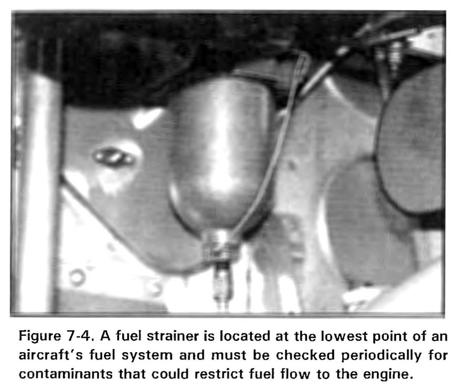
필터 효과는 미크론(micron)으로 측정합니다. 1미크론은 100만 분의 1미터, 약 0.000039인치입니다. 참고로 인간의 눈은 약 40미크론 이상의 물체를 구분할 수 있습니다. 터빈 엔진의 연료 조절 장치 통로는 매우 작아 쉽게 막히므로, 깨끗한 연료의 중단 없는 공급을 위해 대부분 마이크론 필터를 씁니다. 전형적인 셀룰로오스 섬유 마이크론 필터 요소는 10~25미크론 입자를 제거할 수 있습니다. 또 다른 형식은 청동·황동·스테인리스강 와이어 메시 디스크를 쌓은 것으로, 재사용 가능하고 고압에 적합합니다. 2단(two-stage) 필터는 단일 유닛에서 조립·정밀 여과 요건을 모두 충족하는데, 전형적으로 40미크론 주름 메시 요소가 연소실로 가는 주 계통 연료를 여과하고, 10미크론 원통형 메시 요소가 서보 기구 내 연료 조절 장치의 신뢰성 있는 작동을 위한 정밀 여과를 제공합니다.Filter effectiveness is measured in microns—one micron is a millionth of a meter, about 0.000039 inch; the human eye can distinguish objects roughly 40 microns or larger. Turbine fuel-control passages are tiny and clog easily, so most use micron filters; a typical cellulose-fiber element removes 10–25 micron particles. Another type stacks bronze, brass, or stainless wire-mesh disks—reusable and suited to high pressure. A two-stage filter meets both coarse and fine needs in one unit: a 40-micron pleated mesh filters main fuel to the combustor, and a 10-micron cylindrical mesh gives fine filtration for reliable fuel-control servo operation.
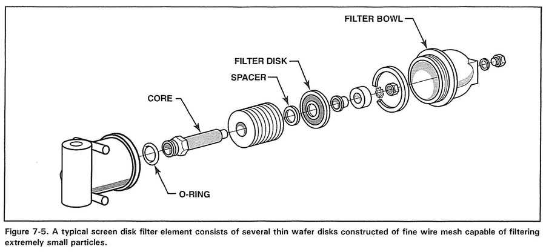
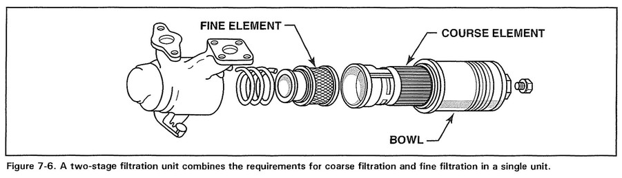
엔진 구동 연료 펌프는 압력 공급식 연료 계통에서 주 압력원으로, 엔진 작동에 필요한 압력으로 연료를 연속 공급합니다. 왕복엔진에서는 정변위(positive-displacement) 펌프가 크랭크축 회전마다 특정량의 연료를 공급하며, 베인식(vane-type) 펌프가 널리 쓰입니다. 전형적 베인식 펌프는 스플라인 시어 샤프트로 구동되는 부속장치로, 펌프 하우징 내 오프셋 보어를 가진 강 슬리브 안에서 중공 로터가 돌고 4개의 베인이 자유롭게 미끄러집니다. 회전 중 베인 사이 체적이 커지고 작아지며 연료를 빨아들이고 밀어냅니다.The engine-driven pump is the primary pressure source in a pressure-feed system, continuously supplying fuel at the needed pressure. On reciprocating engines, a positive-displacement pump delivers a set quantity per crankshaft revolution, and the vane-type pump is widely used—an accessory driven by a splined shear shaft, with a hollow rotor turning inside an offset-bore steel sleeve and four freely sliding vanes whose changing volume draws fuel in and forces it out.
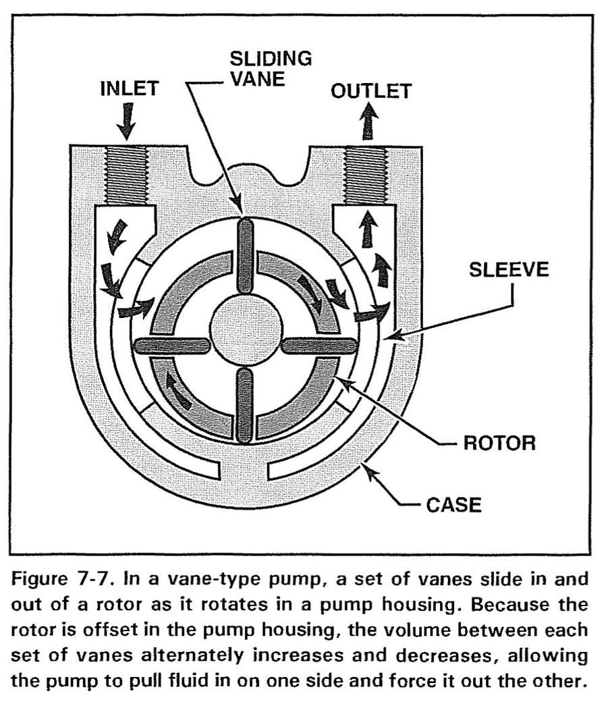
베인식 펌프는 필요보다 많은 연료를 연료 계량 장치로 보내므로, 계량 유닛의 과압을 막기 위해 엔진 구동 펌프에는 보통 스프링 부하 밸브가 있어 초과 연료를 펌프 입구 쪽으로 되돌립니다. 대부분의 연료 펌프에는 밸브 스프링 장력을 조정하는 조정 나사가 있으며, 적절히 설정된 릴리프 밸브는 스로틀 조작 중 연료 압력 변동을 최소화하고 압력을 안전 한계 내로 유지합니다. 고도 보상(altitude-compensating) 연료 펌프는 고도·대기압 변화에 따라 계량 유닛으로 전달되는 연료 압력을 조정하는데, 대기압을 감지하는 다이어프램이 릴리프 밸브 스프링의 힘을 상쇄하거나 보완해 계량 유닛으로의 연료 흐름을 제어합니다. 대부분의 터빈 엔진 주 연료 펌프는 엔진 구동 정변위 펌프로, 공급 연료량이 엔진 속도에 정비례하며 엔진 필요량을 초과해 공급된 잉여 연료는 탱크나 펌프 입구 앞 다른 위치로 되돌립니다.Vane pumps deliver more fuel than needed, so to prevent over-pressurizing the metering unit, engine-driven pumps usually have a spring-loaded valve routing excess fuel back to the pump inlet; most have an adjusting screw for spring tension, and a properly set relief valve minimizes pressure fluctuation during throttle movement and keeps pressure within safe limits. An altitude-compensating pump adjusts delivered pressure with altitude and atmospheric pressure—a diaphragm sensing atmospheric pressure counteracts or supplements the relief-valve spring. Most turbine main fuel pumps are engine-driven positive-displacement pumps whose output is directly related to engine speed, with surplus fuel returned to the tanks or ahead of the pump inlet.
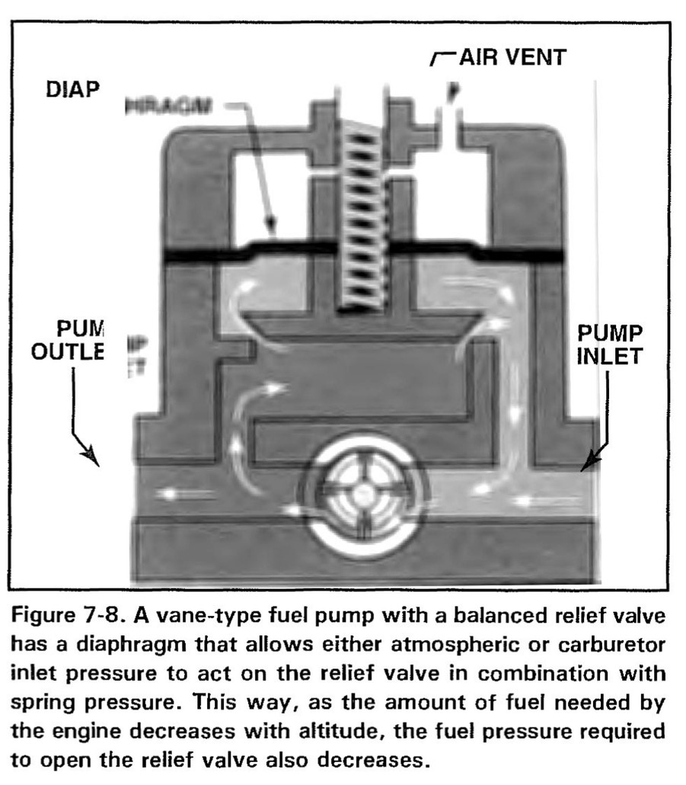
- A. 공연비를 증가시킨다.increase air-fuel ratio.
- B. 엔진 RPM을 증가시킨다.increase engine RPM.
- C. 기화기로 가는 공기 밀도를 낮춘다(decrease the air density to the carburetor).decrease the air density to the carburetor.
- A. 엔진 압력비 감소.Decreases engine pressure ratio.
- B. 압축기·터빈 RPM 감소.Decreases compressor and turbine RPM.
- C. 거의 또는 전혀 영향 없음(Has little or no effect).Has little or no effect.
- A. 로터리 베인식 연료 펌프(Rotary vane-type fuel pump).Rotary vane-type fuel pump.
- B. 원심식 연료 펌프.Centrifugal-type fuel pump.
- C. 기어식 연료 펌프.Gear-type fuel pump.
- A. 연료 탱크 리턴 라인.fuel tank return line.
- B. 연료 펌프 입구측(inlet side of the fuel pump).inlet side of the fuel pump.
- C. 연료 스트레이너 입구측.inlet side of the fuel strainer.
- A. 연료 압력을 대기압 이하로 유지.maintain fuel pressure below atmospheric pressure.
- B. 모든 속도에서 연료 압력 균일화.equalize fuel pressure at all speeds.
- C. 고도 변화에 연료 압력을 보상(compensate fuel pressures to altitude changes).compensate fuel pressures to altitude changes.
- A. 엔진 구동 다이어프램식 연료 펌프.engine-driven diaphragm-type fuel pumps.
- B. 엔진 구동 베인식 연료 펌프(engine-driven vane-type fuel pumps).engine-driven vane-type fuel pumps.
- C. 원심식 연료 부스트 펌프.centrifugal fuel boost pumps.
- A. 양변위 펌프(positive-displacement pump).positive-displacement pump.
- B. 가변변위 펌프.variable-displacement pump.
- C. 부스트 펌프.boost pump.
- A. 부스트 펌프와 탱크 출구.boost pump and tank outlet.
- B. 탱크 출구와 연료 미터링 장치(tank outlet and the fuel metering device).tank outlet and the fuel metering device.
- C. 부스트 펌프와 엔진 구동 연료 펌프.boost pump and engine-driven fuel pump.
- A. 마이크론 필터(Micron filter).Micron filter.
- B. 플레인 스크린 메시 필터.Plain screen mesh filter.
- C. 웨이퍼 스크린 필터.Wafer screen filter.
터빈 연료 펌프·보조 부스트 펌프와 바이패스 밸브 심화 📙 Jeppesen 정독
Turbine Fuel Pumps, Boost Pumps, and Bypass Valves터빈 엔진의 주 엔진 구동 연료 펌프는 보통 단일 또는 이중 기어 요소를 쓰며, 각 요소는 맞물린 외부 스퍼 기어 한 쌍으로 구성됩니다. 일부 펌프는 연료가 기어에 도달하기 전 압력을 높이는 원심 부스트 요소를 포함하는데, 원심 부스트 임펠러가 입구 연료 압력을 30~60psi로 높입니다. 이후 연료는 고압 기어 요소를 통과합니다. 이중 요소가 흔한 이유는 펌프 부하를 분산해 수명을 늘리고 한 요소 고장 시 이중화(redundancy)를 제공하기 때문입니다. 구동 샤프트의 시어 섹션(shear section)은 한 요소가 고장 나도 다른 요소가 계속 작동하도록 합니다. 전형적인 대형 이중 요소 기어 펌프는 최대 1,500psi 압력에 시간당 30,000파운드의 유량을 낼 수 있습니다.A turbine engine's main engine-driven pump usually uses single or dual gear elements, each a meshed pair of external spur gears. Some include a centrifugal boost element that raises inlet pressure to 30–60 psi before fuel reaches the gears, then routes fuel through the high-pressure gear elements. Dual elements are common because they spread pump load (extending life) and provide redundancy; a shear section on the drive shaft lets one element keep working if the other fails. A typical large dual-element gear pump can produce up to 1,500 psi at 30,000 pounds per hour.
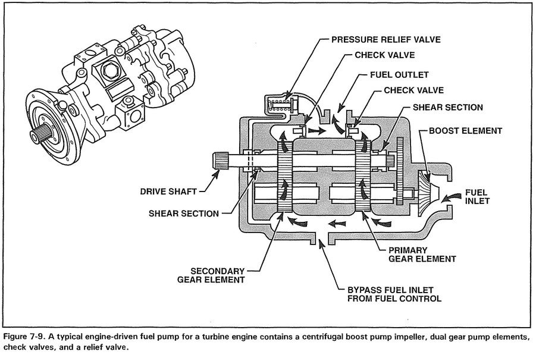
각 기어 요소 출구의 체크 밸브는 엔진 미작동 시 펌프에서 연료가 빠져나가는 것을 막고, 기어 요소 고장 시 재순환을 방지합니다. 펌프 하우징에는 펌프 출력 압력을 제한해 연료 계통을 보호하는 압력 릴리프 밸브가 내장됩니다.A check valve at each gear element's outlet prevents fuel from draining out when the engine is off and stops recirculation if an element fails. A pressure relief valve built into the pump housing protects the system by limiting pump output pressure.
엔진 구동 펌프를 가진 항공기는 보조 연료 펌프(부스트 펌프, boost pump)도 갖춰, 엔진 구동 펌프 입구 쪽에 양(positive)의 연료 압력을 유지합니다. 이는 펌프 캐비테이션(cavitation)과 베이퍼 록을 방지합니다. 부스트 펌프는 또한 엔진 시동용 연료 압력을 제공하고, 엔진 구동 펌프가 막히거나 고장 날 때 대체 압력원이 됩니다. 다발 항공기에서는 보조 펌프가 탱크 간 연료 이송에 자주 쓰여 연료 무게를 재분배하고 안정성을 유지합니다.An aircraft with an engine-driven pump also has an auxiliary (boost) pump to maintain positive pressure on the engine-driven pump's inlet, preventing cavitation and vapor lock. It also provides fuel pressure for starting and an alternate pressure source if the engine-driven pump clogs or fails. In multiengine aircraft it often transfers fuel between tanks to redistribute weight and maintain stability.
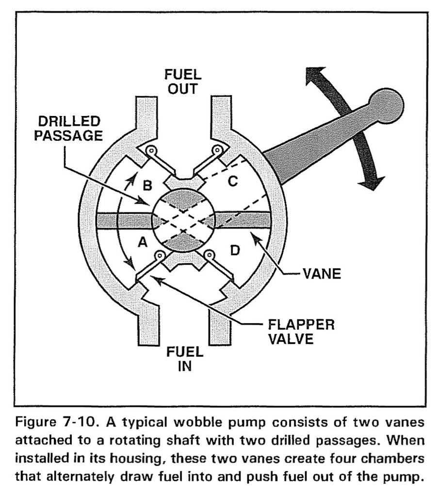
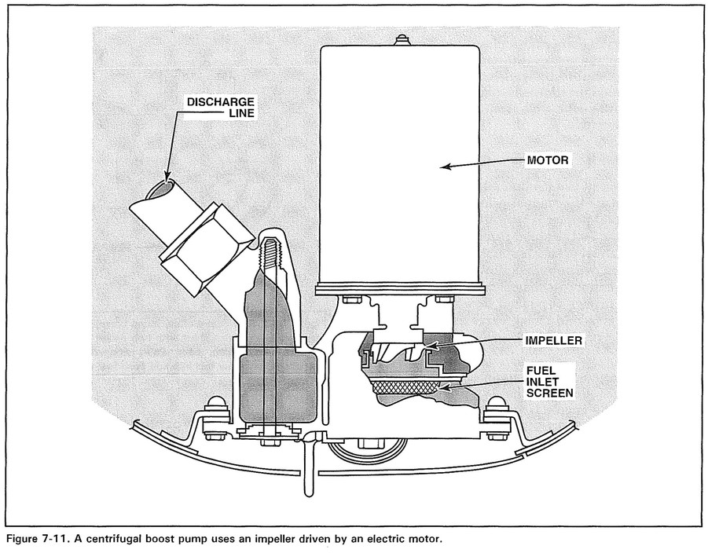
고도 보상 릴리프 밸브를 가진 베인식 연료 펌프는 대기압 또는 기화기 입구 압력이 스프링 압력과 함께 릴리프 밸브에 작용하게 하는 다이어프램을 갖습니다. 이렇게 하면 고도가 오르며 엔진이 필요로 하는 연료량이 줄 때 릴리프 밸브를 여는 데 필요한 연료 압력도 함께 감소합니다. 부스트 펌프에는 전동 모터로 구동되는 임펠러를 쓰는 원심식(centrifugal)과, 교정된 스프링과 전자석으로 플런저를 위아래로 움직여 연료를 펌핑하는 펄싱식(pulsing)이 있습니다. 펄싱식은 브라스 튜브 입구의 체크 밸브가 플런저 상승 시 연료를 받아들이고, 출구 체크 밸브가 플런저 하강 시 연료를 통과시킵니다.A vane-type pump with an altitude-compensating relief valve has a diaphragm letting atmospheric or carburetor-inlet pressure act on the relief valve with spring pressure, so as fuel demand falls with altitude, the pressure needed to open the relief valve also falls. Boost pumps come in centrifugal (an electric-motor-driven impeller) and pulsing types (a calibrated spring and electromagnet move a plunger up and down); in the pulsing type, a check valve at the brass-tube inlet admits fuel as the plunger rises and an outlet check valve passes fuel as it descends.
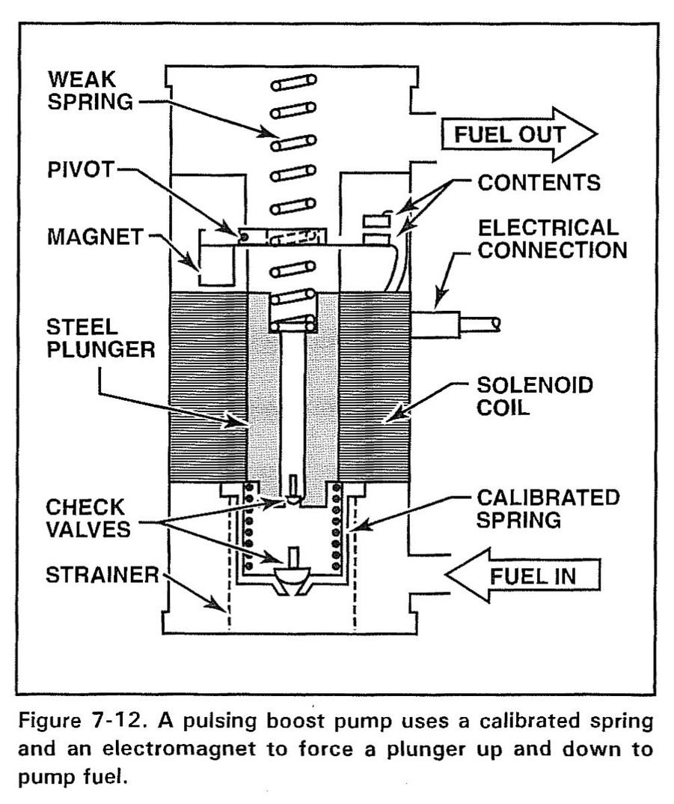
엔진이 엔진 구동 펌프와 부스트 펌프를 모두 가지면 연료 계통에 바이패스 밸브(펌프 직렬 연결 시)나 체크 밸브(펌프 병렬 연결 시)를 넣어야 합니다. 이 밸브들은 엔진 시동 중이나 펌프 고장 시 연료가 엔진 구동 펌프를 우회하도록 합니다. 대부분의 경우 바이패스 밸브는 압력 릴리프 밸브와 함께 설치된 스프링 부하 밸브를 포함합니다. 바이패스 밸브의 스프링 장력은 부스트 펌프 압력이 엔진 구동 펌프 압력을 초과할 때마다 밸브가 열리도록 교정되어, 이때 연료가 엔진으로 직접 흐릅니다.When an engine has both an engine-driven and a boost pump, the system needs bypass valves (pumps in series) or check valves (pumps in parallel) to let fuel bypass the engine-driven pump during start or on failure. Usually the bypass valve is a spring-loaded valve installed with a pressure-relief valve, its spring tension calibrated to open whenever boost-pump pressure exceeds engine-driven-pump pressure, sending fuel directly to the engine.
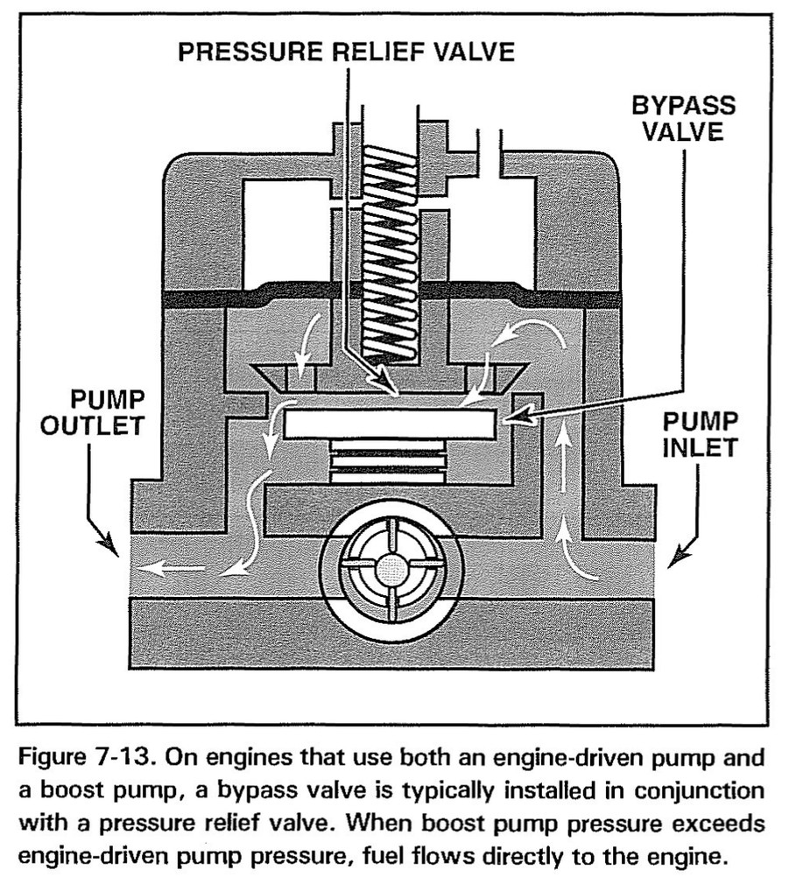
- A. 연료 펌프 압력이 엔진 요구보다 클 때.When the fuel pump pressure is greater than the demand of the engine.
- B. 부스트 펌프 압력이 연료 펌프 압력보다 클 때(boost pump pressure is greater than fuel pump pressure).When the boost pump pressure is greater than fuel pump pressure.
- C. 연료 펌프 출력이 기화기 요구보다 클 때.When the fuel pump output is greater than the demand of the carburetor.
- A. 공기·연료 증기가 원심식 펌프를 통과하지 않는다.Air and fuel vapors do not pass through a centrifugal-type pump.
- B. 펌프가 작동하지 않을 때 임펠러부를 통해 연료를 끌어올 수 있다.Fuel can be drawn through the impeller section of the pump when it is not in operation.
- C. 원심식 펌프는 양변위 펌프로 분류된다(centrifugal-type pump is classified as a positive displacement pump).The centrifugal-type pump is classified as a positive displacement pump.
- A. 연료에서 공기·증기를 분리한다(separates air and vapor from the fuel).It separates air and vapor from the fuel.
- B. 양변위를 가진다.It has positive displacement.
- C. 릴리프 밸브가 필요하다.It requires a relief valve.
- A. 엔진에 양압 연료 흐름을 제공하기 위해(provide a positive flow of fuel to the engine).to provide a positive flow of fuel to the engine.
- B. 이륙 시에만.during takeoff only.
- C. 주로 다른 탱크로 연료 이송을 위해.primarily for fuel transfer to another tank.
연료의 종류: 항공가솔린과 터빈 연료·첨가제 심화 📙 Jeppesen 정독
Fuel Types: Aviation Gasoline, Turbine Fuels, and Additives내연기관은 특정 가솔린 특성을 요구하며, 항공기가 넓은 대기 조건에서 작동하므로 요건이 더 엄격합니다. 항공가솔린(Avgas)의 휘발성(volatility)은 연료가 액체에서 증기로 변하는 능력을 측정하며, 보통 리드 증기압(Reid Vapor Pressure)으로 표현하는데 이는 화씨 100도에서 100LL 가솔린의 부분압을 나타냅니다. 100LL 아브가스의 증기압은 화씨 100도에서 약 7psi입니다. 반면 저급 자동차 가솔린의 리드 증기압은 약 7.8~9psi로, 계절에 따라 조정됩니다.Internal combustion requires certain gasoline properties, made more stringent by the wide atmospheric range aircraft operate in. Avgas volatility—its ability to change from liquid to vapor—is expressed as Reid Vapor Pressure, the partial pressure of 100LL at 100°F. The vapor pressure of 100LL avgas is about 7 psi at 100°F, while lower-grade automotive gasoline is about 7.8–9 psi, adjusted seasonally.
아브가스는 실린더에서 고르게 연소하도록 쉽게 기화해야 합니다. 완전히 미립화되지 않은 연료는 시동 곤란과 거친 작동을 유발합니다. 그러나 너무 쉽게 기화하면 연료 라인에서 증발이 일어나 베이퍼 록이 생기고, 기화기 엔진에서 고휘발성 연료는 극심한 냉각을 일으켜 기화기 결빙 가능성을 높입니다.Avgas must vaporize readily to burn evenly; incompletely atomized fuel causes hard starting and rough running, but if it vaporizes too readily, evaporation in the lines causes vapor lock, and in carbureted engines highly volatile fuel causes extreme cooling that raises the chance of carburetor ice.
항공가솔린은 디토네이션(노킹) 저항 능력에 따라 등급(번호)이 매겨지며, 번호가 높을수록 디토네이션에 강합니다. 옥탄가(octane number)는 연료의 내노크 특성을 이소옥탄과 노말헵탄 혼합물과 비교하는데, 예를 들어 80등급 연료는 이소옥탄 80%·헵탄 20% 혼합물과 같은 내노크 특성을 가집니다. 과거에는 두 개의 성능 번호(예: 100/130)로 표기해 첫 번째는 희박 혼합기 등급, 두 번째는 농후 혼합기 등급을 나타냈으나, 혼동과 취급 오류를 줄이기 위해 현재는 희박 혼합기 성능 번호 하나로만 표기합니다. 흔한 항공가솔린은 아브가스 80, 100, 100LL이며, 100LL과 100은 성능이 동일하고 "LL"은 100보다 낮은 납 함량을 뜻합니다.Avgas is graded by detonation (knock) resistance—the higher the number, the more resistant. The octane number compares anti-knock properties to an iso-octane/normal-heptane mix; grade 80 matches 80% iso-octane and 20% heptane. Fuel once used two performance numbers (e.g., 100/130)—lean rating first, rich second—but to reduce confusion and handling errors, only the lean number is now used. Common avgas is 80, 100, and 100LL; 100LL and 100 perform identically, with "LL" meaning lower lead than 100.
석유 회사가 엔진 디토네이션을 줄이는 한 성분은 4에틸납(TEL, tetraethyl lead)입니다. 그러나 이는 연소실 부품에 부식을 일으키므로, 부식 방지를 위해 에틸렌 브로마이드를 첨가하는데 이 첨가제가 납 산화물과 결합해 부식성 부산물을 엔진 작동 중 실린더에서 배출합니다. TEL의 건강·환경 악영향에 관한 과학적 증거로 대체 첨가제·연료 연구가 계속되고 있습니다. 숫자 등급 외에 색상으로도 연료와 연료 관련 부품 마킹을 식별합니다. 아브가스 80은 적색, 100은 녹색, 100LL은 청색으로 염색·표시됩니다. 항공기 연료 펌프·트럭에는 탱크 양쪽에 색상 코드 식별 데칼이 붙고, 항공기 급유 포트도 라벨링되어 부적절한 등급·종류 연료의 주입을 방지합니다.A component companies use to reduce detonation is tetraethyl lead (TEL), but it corrodes combustion-chamber parts, so ethylene bromides are added to combine with lead oxides and discharge corrosive byproducts from the cylinders during operation. Because of TEL's health and environmental effects, research on alternatives continues. Besides numeric grading, color identifies fuel and component markings: avgas 80 is red, 100 is green, and 100LL is blue. Fuel pumps and trucks carry color-coded decals on each side, and aircraft filler ports are labeled to prevent fueling with the wrong grade or type.
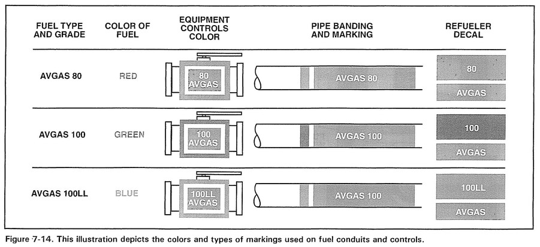
터빈 동력 항공기는 "제트 연료(jet fuel)"라는 케로신 계열 연료를 씁니다. 민간용으로 JET A와 JET A-1이 흔하고, 가솔린과 케로신을 혼합한 JET B는 덜 흔합니다. 제트 연료 명칭은 아브가스와 달리 성능 특성을 나타내지 않고 특정 연료를 식별할 뿐입니다. 엔진에 승인된 터빈 연료 종류는 엔진 형식증명 데이터시트(TCDS)나 항공기 사양에서 확인합니다. 제트 연료 종류의 주된 차이는 어는점으로, JET A는 -40°C, JET A-1은 -47°C, JET B는 -50°C에서 업니다. 제트 연료는 무색이거나 옅은 밀짚색이며, 다른 색이면 미승인 연료일 수 있으니 사용 전 적합성을 확인해야 합니다. 승인된 터빈 연료 저장·분배 장비의 마킹은 검은 바탕에 흰 글자입니다.Turbine aircraft use a kerosene-type "jet fuel." JET A and JET A-1 are common in civil use; JET B (a gasoline-kerosene blend) is less common. Jet fuel designations, unlike avgas, only identify a fuel and don't describe performance—check the engine TCDS or aircraft specifications for approved types. The main difference is freezing point: JET A freezes at -40°C, JET A-1 at -47°C, JET B at -50°C. Jet fuel is colorless or light straw; a different color may mean unapproved fuel, so verify suitability first. Markings for approved turbine-fuel equipment are white letters on a black background.
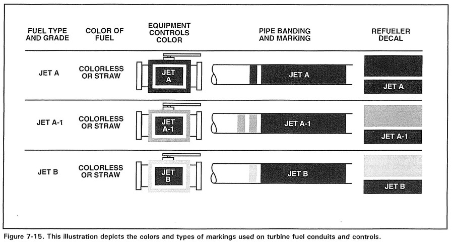
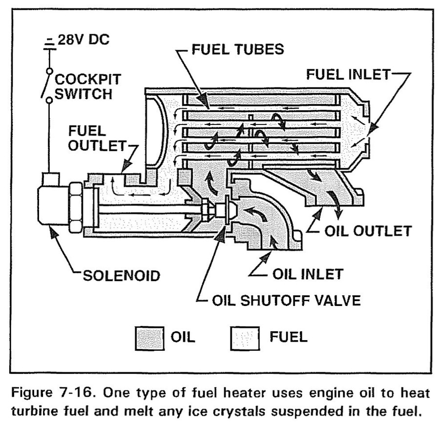
제트 연료는 아브가스보다 점도가 높아 펌프와 연료 조절 장치에서 윤활제 역할을 합니다. 단점은 제트 연료가 물과 고형물을 머금어 섬프에 쉽게 침전되지 않는 것입니다. 연료에 물이 있으면 연료 결빙이나 미생물 성장 가능성이 커지므로, 많은 제조사가 제빙·항균 첨가제 사용을 권장합니다. 극저온을 제외하면 제빙 첨가제는 연료 계통 내 물의 결빙을 효과적으로 방지하고, 항균제는 미생물·곰팡이·박테리아를 죽입니다. 이런 미생물은 연료 탱크 내부에 슬라임(엉킨 찌꺼기)을 형성해 필터·연료 라인을 막고 연료 셀을 부식시킬 수 있습니다.Jet fuel is more viscous than avgas, so it lubricates pumps and fuel-control units; the downside is that it holds water and solids that don't settle easily into sumps. Water raises the potential for fuel icing or microbial growth, so many manufacturers recommend anti-icing and antimicrobial additives. Except at extremely low temperatures, anti-icing additives effectively prevent water from freezing in the system, and antimicrobial agents kill microbes, fungi, and bacteria that form slime inside tanks, clogging filters and lines and corroding fuel cells.
- A. 관제탑에 현재 해면 기압·온도 문의.call the control tower to obtain current sea level barometric pressure and temperature.
- B. 항공기 외기 온도(OAT) 게이지 확인.observe the reading on the aircraft outside air temperature (OAT) gauge.
- C. 엔진으로 들어가는 공기 온도에 상응하는 정확한 온도 측정값 확보(obtain a true temperature reading comparable to that of the air that enters the engine).obtain a true temperature reading comparable to that of the air that enters the engine.
- A. 따뜻한 온도.warm temperatures.
- B. 물의 존재(presence of water).the presence of water.
- C. 먼지나 기타 입자상 오염물의 존재.the presence of dirt or other particulate contaminants.
- A. 케로신은 점화·윤활을 돕는 매우 높은 휘발성을 가짐.kerosene has very high volatility which aids in ignition and lubrication.
- B. 케로신은 갤런당 열에너지가 더 많고 연료계통 부품을 윤활(has more heat energy per gallon and lubricates fuel system components).kerosene has more heat energy per gallon and lubricates fuel system components.
- C. 케로신은 물을 전혀 함유하지 않음.kerosene does not contain any water.
기화기와 연료계량 📙 Jeppesen 참고
Carburetors & Fuel Metering기화기는 벤투리의 압력강하로 연료를 흡입해 공기와 섞습니다. 플로트식(float-type)은 플로트실 유면으로 연료량을 유지하고, 압력식(pressure)·연료분사식은 결빙에 강하고 자세 변화에 무관합니다. 혼합비는 고도가 오르면 공기밀도가 낮아 농후해지므로 믹스처 컨트롤로 조절(리닝)합니다. 기화기 결빙 방지엔 카뷰레터 히트를, 가속 시 순간 희박을 막으려 가속펌프를 둡니다.A carburetor draws fuel by the venturi pressure drop and mixes it with air. Float-type units keep fuel level with a float chamber, while pressure and injection types resist icing and are attitude-independent. As altitude rises, thinner air richens the mixture, so the mixture control leans it. Carburetor heat prevents induction icing, and an accelerator pump prevents a momentary lean spot on acceleration.
연료분사(fuel injection)는 각 실린더 흡기포트에 직접 분사해 분배가 균일하고 기화기 결빙이 없습니다. 계통은 엔진구동펌프→연료조절부→플로디바이더→노즐로 흐릅니다. 터빈엔진은 연료조절기(FCU/FADEC)가 출력레버·rpm·온도·압력에 맞춰 연료를 계량하고, 연료히터로 결빙을, 필터로 오염을 막습니다.Fuel injection sprays directly at each cylinder's intake port for even distribution and no carburetor icing. Flow is engine-driven pump → fuel control → flow divider → nozzles. Turbine engines use a fuel control unit (FCU/FADEC) to meter fuel for power lever, rpm, temperature, and pressure, with a fuel heater against icing and filters against contamination.
- A. 블로아웃 또는 다이아웃 방지(prevent blowout or die-out).prevent blowout or die-out.
- B. 오버템퍼러처 방지.prevent overtemperature.
- C. 팽창·수축으로 인한 터빈 휠과 케이스 간 마찰 방지.prevent friction between turbine wheels and the case due to expansion and contraction.
기화기 심화: 에어블리드·아이들링 시스템과 혼합비 제어 📙 Jeppesen 정독
Carburetor Air Bleed, Idling System, and Mixture Control액체의 표면장력(surface tension)은 분자 응집력의 결과로, 액체가 쉽게 분리되지 않게 합니다. 표면장력 때문에 연료가 자기 자신과 배출 노즐 벽에 달라붙어, 노즐에서 미세하고 연속적인 분무 대신 크고 간헐적인 물방울로 배출됩니다. 표면장력 효과를 교란하기 위해 기화기 설계에 에어블리드(air bleed) 시스템을 자주 넣습니다. 에어블리드는 작고 교정된 오리피스를 가진 통기 통로로, 한쪽 끝은 배출 노즐 밑부분 근처의 계량된 연료로 열리고 다른 쪽 끝은 플로트 레벨 위 벤투리 뒤의 대기압으로 통기됩니다.Surface tension, a result of molecular cohesion, keeps a liquid from breaking apart easily. It makes fuel adhere to itself and to the discharge-nozzle walls, so fuel leaves the nozzle in large intermittent droplets instead of a fine continuous spray. To disrupt this, an air bleed system is often built into the carburetor: a vented passage with a small calibrated orifice, one end opening into metered fuel near the nozzle base and the other vented above float level to ambient pressure behind the venturi.
벤투리의 저압은 플로트 챔버에서 연료를 끌어낼 뿐 아니라 벤투리 뒤에서 공기도 끌어냅니다. 블리드 공기와 연료가 배출 노즐에서 섞이며 연료가 유화(emulsify)되고 표면장력이 교란됩니다. 표면장력이 교란되면 연료가 미세하고 균일한 분무로 배출되어 기화를 촉진합니다.The venturi's low pressure draws fuel from the float chamber and also air from behind the venturi. Bleed air and fuel mix in the discharge nozzle, emulsifying the fuel and disrupting surface tension, so fuel discharges as a fine, uniform spray that promotes vaporization.
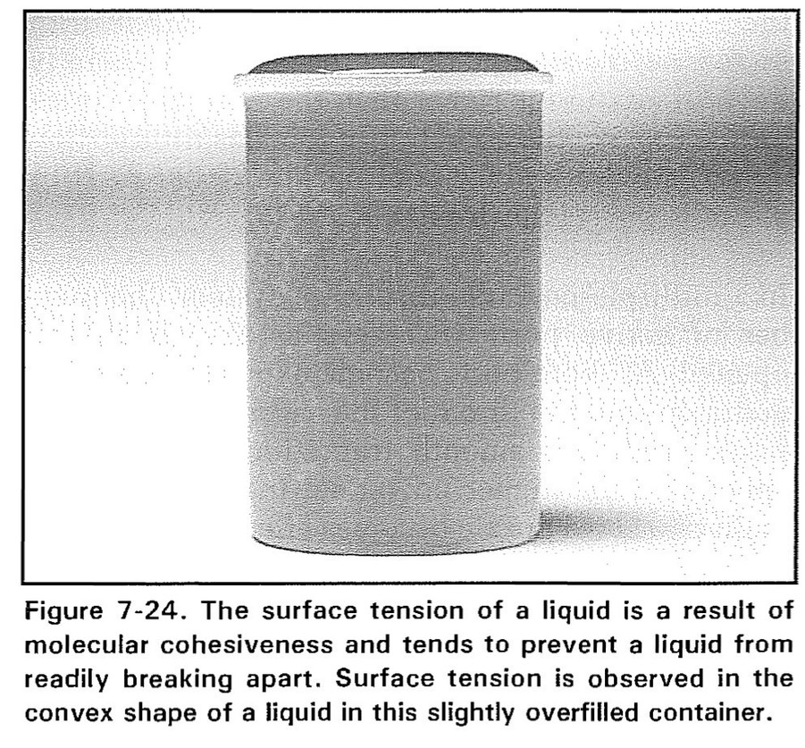
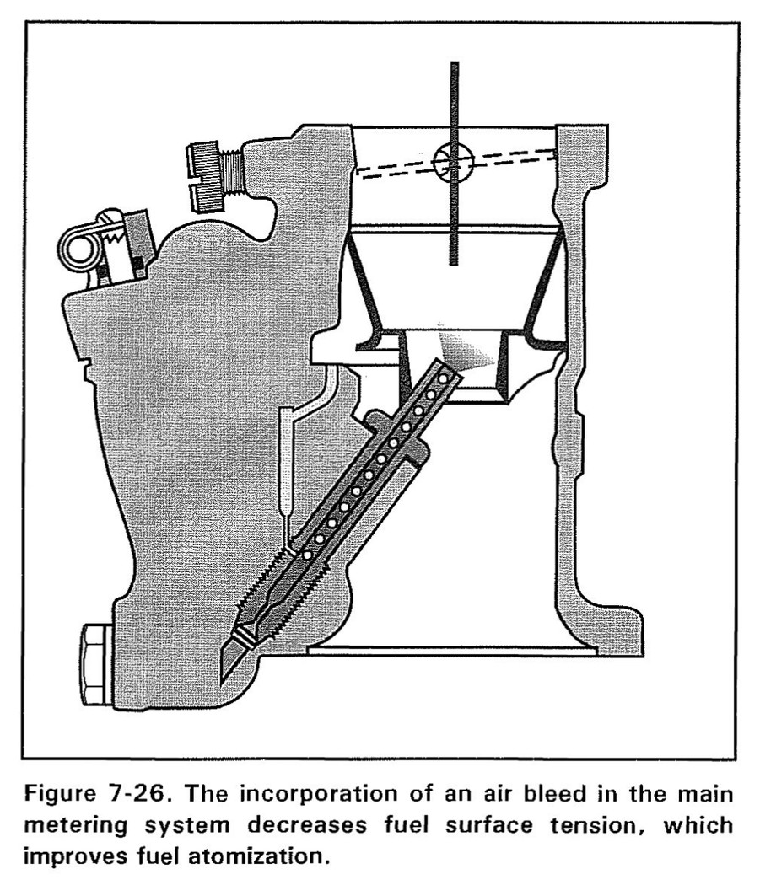
엔진이 아이들 속도로 작동할 때는 스로틀 밸브가 거의 닫혀 벤투리를 지나는 공기 속도가 제한되고 차압이 약합니다. 어떤 경우 차압이 너무 낮아 주 배출 노즐로 충분한 연료를 끌어낼 수 없습니다. 아이들에서 일관된 작동을 보장하기 위해 스로틀 밸브 가장자리 근처, 공기가 흐르는 기화기 배럴에 작은 통로(또는 일련의 통로)를 뚫습니다. 이 아이들 배출 포트(아이들 제트)는 아이들 에멀전 튜브로 주 계량 제트에 연결됩니다. 에멀전 튜브의 아이들 계량 제트가 주 배출 계통에서 끌어낼 연료량을 조절하고, 아이들 에어블리드가 연료를 유화합니다. 스로틀 플레이트가 배출 포트에 벤투리를 만들고, 그 저압이 아이들 배출 포트에서 연료를 끌어내 기류로 배출합니다.At idle, the nearly closed throttle limits venturi air velocity and weakens differential pressure—sometimes too low to draw enough fuel through the main nozzle. To ensure consistent idle, small passages are drilled in the carburetor barrel near the throttle edge where air flows. These idle discharge ports (idle jets) connect to the main metering jet by an idle emulsion tube; an idle metering jet in the tube regulates fuel drawn from the main system and an idle air bleed emulsifies it. The throttle plate creates a venturi at the ports, and the low pressure draws fuel from the idle ports into the airstream.
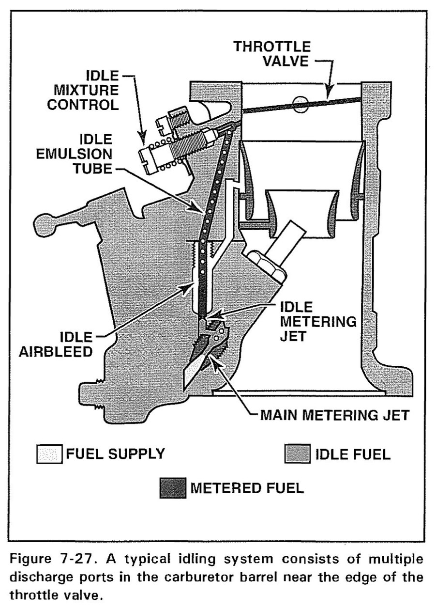
대부분의 기화기는 상부 아이들 배출 포트로 기류에 배출되는 연료를 제어하는 정비 조정식 니들 밸브를 포함합니다. 썸스크루를 안으로 돌리면 배출 연료가 줄어 아이들 혼합기가 희박해지고, 밖으로 돌리면 배출 연료가 늘어 농후해집니다. 일반적으로 아이들 혼합기는 정상 혼합기보다 농후한데, 아이들 작동 시 실린더 냉각용 기류가 적어 농후한 혼합기가 이 손실을 부분적으로 상쇄하기 때문입니다. 다중 포트 아이들 배출 계통에서는 스로틀이 열릴수록 활성 포트 수가 늘어, 더 많은 포트가 노출되며 더 많은 연료가 기화기 목으로 들어옵니다. 다중 포트는 아이들 속도와 주 배출 노즐이 유효해지는 고출력 설정 사이의 부드러운 전환을 제공합니다.Most carburetors have a maintenance-adjustable needle valve controlling fuel through the upper idle port. Turning the thumbscrew in leans the idle mixture; turning it out richens it. The idle mixture is generally richer than normal because idle operation gives little cooling airflow over the cylinders, and the richer mixture partly offsets this. In a multiple-port system, more ports become active as the throttle opens, drawing more fuel into the throat and giving a smooth transition between idle and the higher settings where the main nozzle becomes effective.
혼합비 제어(mixture control) 계통은 조종사가 엔진에 공급되는 혼합기를 조절하는 방법을 제공합니다. 기화기 내부에서 주 계량 제트로 가는 연료는 가변 오리피스(variable orifice)나 백석션(back suction)으로 제어할 수 있으며, 일부 기화기는 자동 혼합비 제어도 포함합니다. 가변 오리피스 방식에서는 혼합비 컨트롤이 플로트 챔버의 밸브에 연결되어 플로트 챔버와 주 계량 제트 사이 통로 크기를 제어합니다. 일부는 니들 밸브를, 다른 일부는 스텝컷 로터리 밸브를 쓰며, 어느 경우든 밸브는 주 연료 계량 제트와 직렬로 설치됩니다.The mixture control lets the pilot adjust the mixture supplied to the engine. Inside the carburetor, fuel to the main metering jet can be controlled by a variable orifice or by back suction, and some carburetors add automatic mixture control. In the variable-orifice type, the mixture control attaches to a valve in the float chamber to control the passage size between the float chamber and main metering jet—some use a needle valve, others a step-cut rotary valve—installed in series with the main jet.
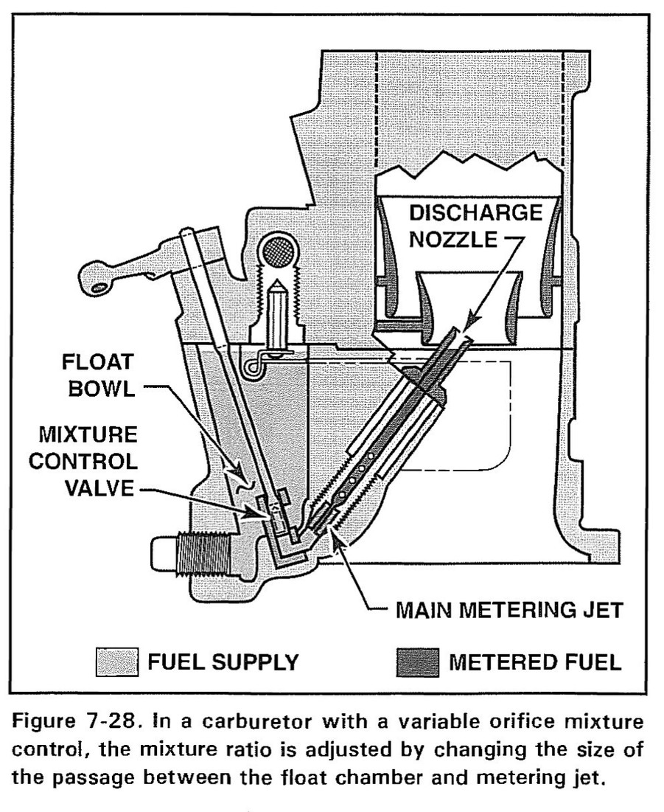
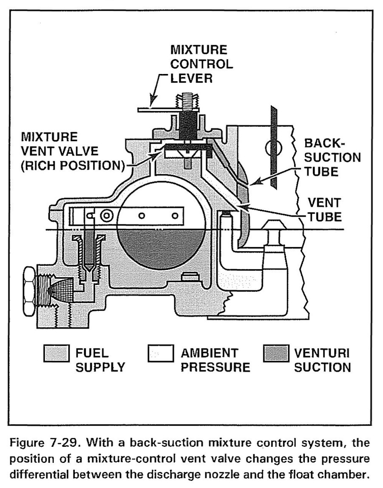
- A. 압력과 속도 사이에 직접 관계 없음.There is no direct relationship between the pressure and the velocity.
- B. 압력은 속도에 정비례.The pressure is directly proportional to the velocity.
- C. 압력은 속도에 반비례(pressure is inversely proportional to the velocity).The pressure is inversely proportional to the velocity.
- A. 감소한다.decrease.
- B. 벤투리 출구 압력과 같아진다.be equal to the pressure at the venturi outlet.
- C. 증가한다(increase).increase.
- A. 벤투리 부분의 압력을 변화시켜.varying the pressure within the venturi section.
- B. 플로트 챔버 내 연료에 작용하는 압력을 변화시켜(varying the pressure acting on the fuel in the float chamber).varying the pressure acting on the fuel in the float chamber.
- C. 메인 미터링 오리피스(제트)의 유효 단면적을 변화시켜.changing the effective cross-sectional area of the main metering orifice (jet).
- A. 벤투리 압력 강하 조절.regulating the pressure drop at the venturi.
- B. 플로트 챔버 내 연료에 작용하는 압력 조절(regulating the pressure on the fuel in the float chamber).regulating the pressure on the fuel in the float chamber.
- C. 스로틀 밸브 뒤쪽 혼합기 흡입 조절.regulating the suction on the mixture from behind the throttle valve.
- A. 정격 출력에서 희박.lean at rated power.
- B. 정격 출력에서 농후(rich at rated power).rich at rated power.
- C. 아이들에서 농후.rich at idling.
- A. 플로트 레벨이 너무 낮음.Float level too low.
- B. 막힌 메인 에어 블리드(Clogged main air bleed).Clogged main air bleed.
- C. 막힌 대기 벤트.Clogged atmospheric vent.
- A. 벤투리 목의 저압 구역이 아이들 통로에서 연료를 끌어들인다.The low-pressure area created in the throat of the venturi pulls the fuel from the idle passage.
- B. 기후 조건은 아이들 혼합기 요건에 거의 영향을 주지 않는다.Climatic conditions have very little effect on idle mixture requirements.
- C. 스로틀 밸브 가장자리와 스로틀 보디 사이의 저압이 아이들 통로에서 연료를 끌어들인다(low pressure between the edges of the throttle valve and the throttle body pulls the fuel from the idle passage).The low pressure between the edges of the throttle valve and the throttle body pulls the fuel from the idle passage.
- A. 아이들 디스차지 노즐에서(from the idle discharge nozzle).from the idle discharge nozzle.
- B. 벤투리에서.in the venturi.
- C. 아이들 디스차지 에어 블리드를 통해.through the idle discharge air bleed.
- A. 엔진 작동이 어떤 RPM에서도 영향받지 않음.engine operation will not be affected at any RPM.
- B. 엔진이 아이들이 안 됨(engine will not idle).engine will not idle.
- C. 아이들 혼합기가 더 농후해짐.idle mixture becomes richer.
- A. 니들 밸브와 시트 교체(Replace the needle valve and seat).Replace the needle valve and seat.
- B. 혼합 조절 조정.Adjust the mixture control.
- C. 스로틀 링키지 조정.Adjust throttle linkage.
- A. 플로트 레벨이 너무 높음.float level is too high.
- B. 메인 에어 블리드가 막힘.main air bleed is clogged.
- C. 가속 펌프가 제대로 작동하지 않음(accelerating pump is not operating properly).accelerating pump is not operating properly.
- A. 엔진 오버홀 시(At engine overhaul).At engine overhaul.
- B. 매년.Annually.
- C. 엔진 교체 시.At engine change.
압력 기화기와 자동 혼합비 제어(AMC) 심화 📙 Jeppesen 정독
Pressure Carburetors and Automatic Mixture Control압력 기화기(pressure carburetor)는 플로트식 기화기와 다르지만 기본 계통은 동일합니다. 대표적인 벤딕스 PS7BD 압력 기화기는 벤투리, 스로틀 밸브, 아이들 밸브, 배출 노즐 밸브, 가속 펌프, 자동 혼합비 제어 조립체, 파워 인리치먼트 밸브, 연료 레귤레이터/컨트롤 유닛으로 구성됩니다. 일부 압력분사 기화기는 자동 혼합비 제어(AMC, Automatic Mixture Control)를 사용해 비행 중 연료·공기 혼합비를 지속적으로 조정합니다. 이 조정은 상승·하강, 대기압 변화, 온도 변화로 인한 공기 밀도 변화를 보상합니다.A pressure carburetor differs from a float type but shares the same basic systems. The typical Bendix PS7BD includes a venturi, throttle valve, idle valve, discharge-nozzle valve, accelerator pump, automatic-mixture-control assembly, power-enrichment valve, and fuel regulator/control unit. Some pressure-injection carburetors use an automatic mixture control (AMC) to continuously adjust the fuel/air mixture in flight, compensating for air-density changes from climbing or descending, atmospheric-pressure variations, and temperature changes.
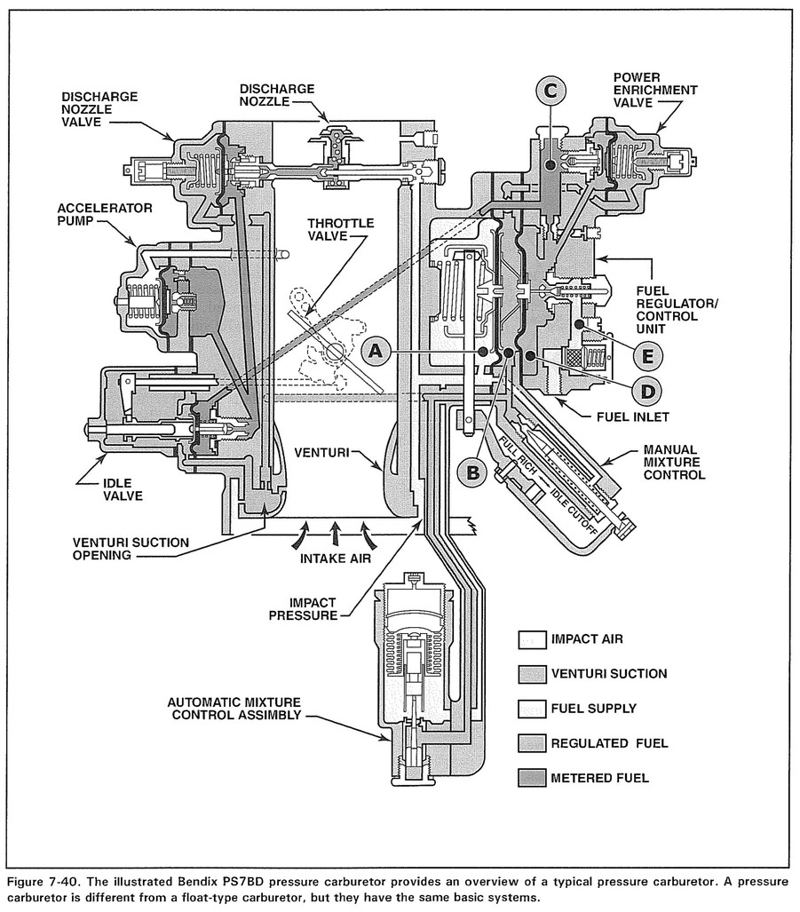
전형적인 AMC는 헬륨을 채운 황동 벨로우즈로 역테이퍼 니들 밸브를 작동합니다. 주변 압력이 변하면 벨로우즈가 팽창·수축하며 챔버 A와 챔버 B 사이 에어블리드 오리피스 크기를 변화시킵니다. 대기압이 낮아지면(상승 시) 벨로우즈가 팽창해 혼합기를 희박하게 하고, 대기압이 높아지면(하강 시) 벨로우즈가 수축해 혼합기를 농후하게 합니다.A typical AMC uses a helium-filled brass bellows to actuate a reverse-tapered needle valve. As ambient pressure changes, the bellows expands or contracts, varying the air-bleed orifice size between chamber A and chamber B. When atmospheric pressure decreases (climb), the bellows expands and leans the mixture; when it increases (descent), the bellows contracts and richens the mixture.
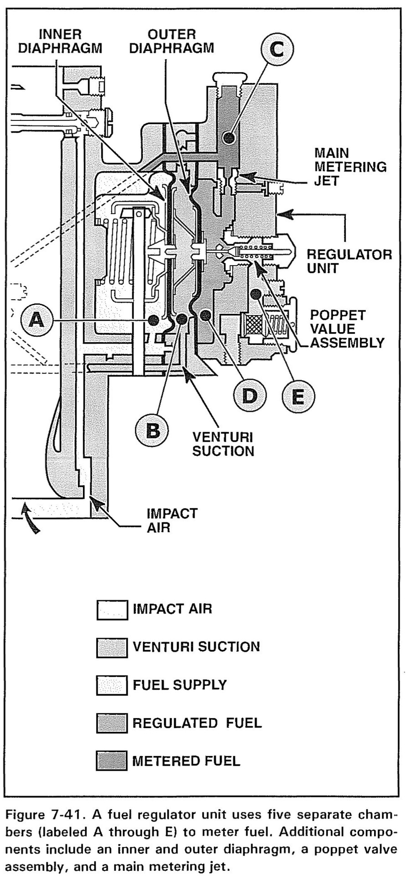
혼합비 컨트롤을 아이들 컷오프(idle-cutoff) 위치로 옮기면 기화기로의 연료 흐름이 멈춥니다. 챔버 A의 스프링은 엔진이 아이들 속도일 때 연료 레귤레이터 팝핏 밸브를 엽니다. 기계적 링키지가 혼합비 컨트롤과 릴리스 레버를 연결해, 아이들 컷오프가 선택되면 팝핏 밸브가 닫히도록 합니다. 레버가 아이들 스프링을 압축해 다이어프램의 모든 압력을 제거하면 팝핏 밸브가 닫혀 연료 흐름이 멈춥니다.Moving the mixture control to idle-cutoff stops fuel flow to the carburetor. A spring in chamber A opens the fuel-regulator poppet valve at idle speed. A mechanical linkage connects the mixture control to a release lever so that when idle-cutoff is selected, the poppet valve closes: the lever compresses the idle spring to remove all pressure from the diaphragm, and the poppet valve closes to stop fuel flow.
엔진이 아이들 속도로 작동할 때는 챔버 A와 챔버 B의 차압이 연료 레귤레이터 컨트롤 팝핏 밸브를 열어둘 만큼 충분하지 않습니다. 밸브를 열어두는 챔버 A의 스프링은 부정확해 연료를 정밀하게 계량할 수 없습니다. 아이들에서 배출 노즐로 가는 연료량을 제어하기 위해 압력분사 기화기는 아이들 니들 밸브를 씁니다. 이 니들 밸브는 스로틀 샤프트 조립체에 연결되며, 로드 길이가 아이들 속도를 결정하는데 이는 아이들 니들 밸브 오리피스 크기의 함수입니다. 연료 레귤레이터 유닛은 다섯 개의 별도 챔버(A~E)로 연료를 계량하며, 내부·외부 다이어프램, 팝핏 밸브 조립체, 주 계량 제트를 포함합니다.At idle, the pressure differential between chambers A and B is insufficient to hold the fuel-regulator control poppet valve open, and the chamber-A spring holding it open is imprecise and cannot accurately meter fuel. To control fuel to the discharge nozzle at idle, pressure-injection carburetors use an idle needle valve linked to the throttle-shaft assembly; the rod length sets idle speed, a function of the idle-needle-valve orifice size. The fuel regulator unit meters fuel with five separate chambers (A through E) and includes inner and outer diaphragms, a poppet-valve assembly, and a main metering jet.
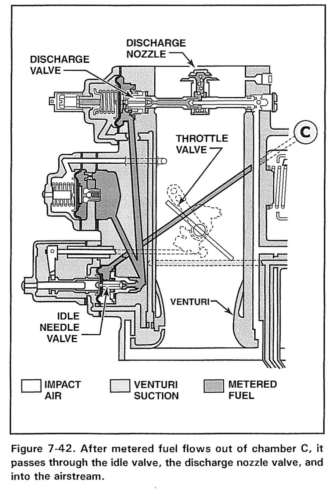
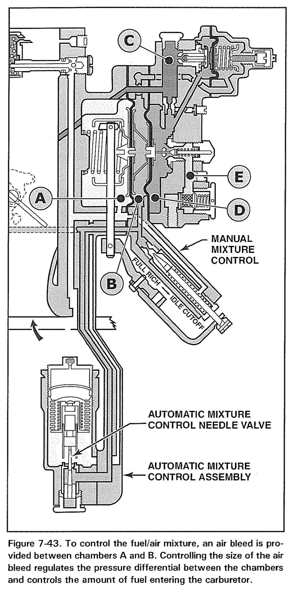
기화기에서 스로틀을 급격히 열면 공기 흐름이 연료 흐름보다 빠르게 증가합니다. 압력분사 기화기는 3챔버 다이어프램 펌프로 이 상황을 극복합니다. 챔버 C에서 계량된 연료가 나온 뒤 아이들 밸브와 배출 노즐 밸브를 지나 기류로 들어갑니다. 이러한 가속 시스템은 스로틀 급조작 시 순간적인 희박 상태를 막아 부드러운 가속을 보장합니다.Opening the throttle rapidly makes airflow increase faster than fuel flow; a pressure-injection carburetor overcomes this with a three-chamber diaphragm pump. After metered fuel leaves chamber C, it passes through the idle valve and discharge-nozzle valve into the airstream. This acceleration system prevents a momentary lean condition during rapid throttle movement, ensuring smooth acceleration.
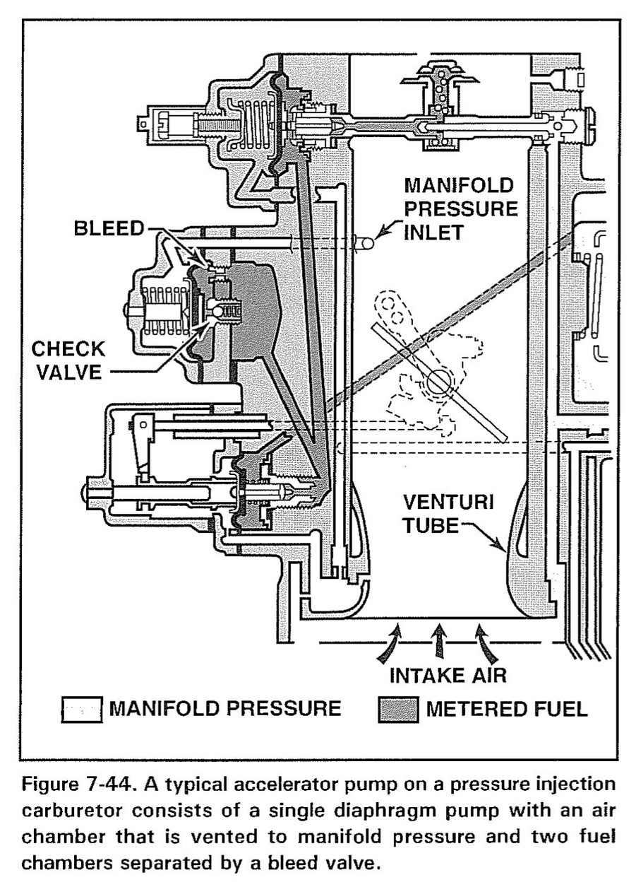
- A. 속도 증가, 온도 증가, 압력 감소.Velocity increases, temperature increases, and pressure decreases.
- B. 속도 감소, 온도 증가, 압력 증가.Velocity decreases, temperature increases, and pressure increases.
- C. 속도 증가, 온도 감소, 압력 감소(Velocity increases, temperature decreases, and pressure decreases).Velocity increases, temperature decreases, and pressure decreases.
- A. 공연비 비례 조정.Proportions the air-fuel mixture.
- B. 아이들 계통 조절(Regulates the idle system).Regulates the idle system.
- C. 최대 스로틀 시 기류 제한.Limits the airflow at full throttle.
- A. 스로틀 밸브가 열릴 때 벤투리 흡입 증가.An increase in venturi suction when the throttle valve is open.
- B. 스로틀 밸브가 열릴 때 매니폴드 압력 증가(increase in manifold pressure that occurs when the throttle valve is opened).An increase in manifold pressure that occurs when the throttle valve is opened.
- C. 스로틀 밸브가 열릴 때 매니폴드 압력 감소.A decrease in manifold pressure that occurs when the throttle valve is opened.
- A. 플로트 샤프트를 늘이거나 줄임.Lengthening or shortening the float shaft.
- B. 니들 밸브 시트 아래 심을 추가·제거(Add or remove shims under the needle-valve seat).Add or remove shims under the needle-valve seat.
- C. 플로트 암 피벗 각도 변경.Change the angle of the float arm pivot.
- A. 기류 증가에 따라 플로트 챔버 압력 증가.pressure in the float chamber to increase as airflow through the carburetor increases.
- B. 기류 증가에 따라 점진적으로 더 농후한 혼합기(progressively richer mixture as airflow increases).a progressively richer mixture as airflow through the carburetor increases.
- C. 특히 저속에서 더 나은 연료 기화·조절.better fuel vaporization and control of fuel discharge, especially at lower engine speeds.
- A. 낮아지고 혼합기를 농후하게.lower, and enrich the mixture.
- B. 높아지고 혼합기를 농후하게(rise, and enrich the mixture).rise, and enrich the mixture.
- C. 높아지고 혼합기를 희박하게.rise, and lean the mixture.
- A. 누설하는 니들 밸브와 시트 어셈블리(leaking needle valve and seat assembly).a leaking needle valve and seat assembly.
- B. 가속 펌프 샤프트 고착.the accelerating pump shaft being stuck.
- C. 막힌 백석션 라인.a clogged back-suction line.
- A. 메인 에어 블리드(main air bleed).main air bleed.
- B. 백석션 라인.back-suction line.
- C. 대기 벤트 라인.atmospheric vent line.
- A. 벤투리와 디스차지 노즐 사이.Between the venturi and the discharge nozzle.
- B. 메인 디스차지 노즐과 벤투리 뒤(After the main discharge nozzle and venturi).After the main discharge nozzle and venturi.
- C. 벤투리 뒤이고 메인 디스차지 노즐 바로 앞.After the venturi and just before the main discharge nozzle.
- A. 고도에서 연료 유량 증가.increase fuel flow at altitude.
- B. 혼합기를 조절하기 위해 공기 계량.meter air to adjust the mixture.
- C. 연료 밀도를 낮추고 표면장력을 파괴(decrease fuel density and destroy surface tension).decrease fuel density and destroy surface tension.
- A. 벤투리와 메인 디스차지 노즐 앞.ahead of the venturi and main discharge nozzle.
- B. 메인 디스차지 노즐 뒤이고 벤투리 앞.after the main discharge nozzle and ahead of the venturi.
- C. 벤투리와 엔진 사이(between the venturi and the engine).between the venturi and the engine.
- A. 모든 RPM.All RPM's.
- B. 순항 RPM만.Cruising RPM only.
- C. 아이들 범위 이상의 모든 RPM(All RPM's above idle range).All RPM's above idle range.
- A. 아이들 속도에서 혼합기 조정 수단 제공.It provides a means for adjusting the mixture at idle speeds.
- B. 아이들 속도에서 연료 기화.It vaporizes the fuel at idling speeds.
- C. 아이들 속도에서 연료를 에멀션화·기화하는 데 도움(aids in emulsifying/vaporizing the fuel at idle speeds).It aids in emulsifying/vaporizing the fuel at idle speeds.
- A. 조정 가능한 스로틀 스톱 또는 링키지(adjustable throttle stop or linkage).An adjustable throttle stop or linkage.
- B. 오리피스와 조정 가능한 테이퍼 니들.An orifice and adjustable tapered needle.
- C. 플로트 챔버 공간과 기화기 벤투리를 연결하는 드릴 통로의 조정 가능한 니들.An adjustable needle in the drilled passageway which connects the airspace of the float chamber and the carburetor venturi.
- A. 온도·고도로 인한 공기 밀도 변화를 보상(compensates for change in the air density due to temperature and altitude).It compensates for change in the air density due to temperature and altitude.
- B. 플로트 챔버 내 연료 위 공기 압력을 보상.It compensates for the air pressure above the fuel in the float chamber.
- C. 플로트식 기화기의 벤투리 공기 압력을 보상.It compensates for the air pressure in the venturi of a float-type carburetor.
- A. 전체 엔진 작동 범위에 걸쳐 일정하게 유지된다(held constant throughout the entire engine operating range).is held constant throughout the entire engine operating range.
- B. 챔버 D와 챔버 E 사이의 포핏 밸브 위치에 따라 변한다.varies according to the position of the poppet valve located between chamber D (unmetered fuel) and chamber E (engine-driven fuel pump pressure).
- C. 챔버 A의 압력과 거의 같다.will be approximately equal to the pressure in chamber A (impact pressure).
- A. 독립 작동하므로 관계 없음(No relationship since they operate independently).No relationship since they operate independently.
- B. 비계량 연료 압력이 둘 다에 영향.Unmetered fuel pressure affects both units.
- C. 가속 펌프가 인리치먼트 밸브를 작동.The accelerating pump actuates the enrichment valve.
파워 인리치먼트·물분사(ADI)와 압력 기화기 정비 심화 📙 Jeppesen 정독
Power Enrichment, Water Injection (ADI), and Pressure Carburetor Maintenance일부 기화기는 더블스텝 아이들 밸브로 파워 인리치먼트를 구현합니다. 니들 밸브가 단(step)으로 절삭되어 아이들과 순항 출력 설정에 맞는 연료량을 조절합니다. 첫 단(아이들 스텝)이 열려 아이들 연료가 배출 노즐로 흐르고, 출력이 순항으로 증가하면 벤투리 흡입이 커져 니들 밸브를 더 열어 두 번째 단(순항 스텝)이 연료 흐름을 조절합니다. 순항 출력 이상에서는 벤투리 흡입이 밸브를 완전히 열어 추가 연료가 흐르며, 고출력 설정에서는 주 계량 제트만이 연료 흐름의 유일한 제한이 됩니다.Some carburetors provide power enrichment with a double-step idle valve, its needle cut in steps to regulate fuel for idle and cruise settings. The first (idle) step opens to send idle fuel to the nozzle; as power rises to cruise, venturi suction increases and opens the valve further so the second (cruise) step regulates flow. Above cruise, venturi suction fully opens the valve for additional fuel, and at high power only the main metering jet limits flow.
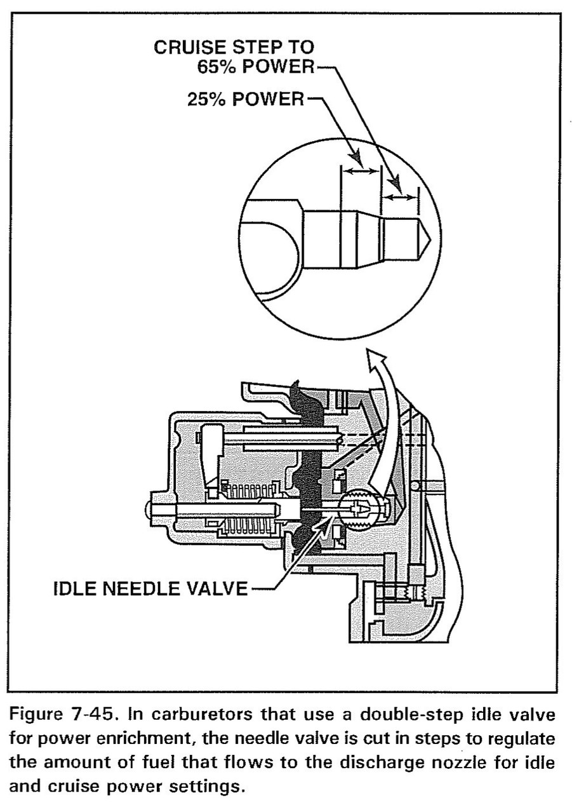
에어플로 인리치먼트 밸브(airflow enrichment valve)는 주 계량 제트와 병렬인 연료 통로에 위치한 파워 인리치먼트 시스템입니다. 전형적인 에어플로 인리치먼트 밸브는 벤투리 압력을 감지해 엔진이 고출력으로 작동할 때 조정되는 니들 밸브 조립체로 구성됩니다. 엔진이 순항 이하로 작동하면 스프링 압력이 인리치먼트 밸브를 닫아두어 주 계량 제트가 엔진에 공급되는 연료를 제한합니다. 순항 이상에서는 벤투리를 지나는 기류 증가로 인리치먼트 니들 밸브가 열려, 추가 연료가 계량 제트를 우회해 혼합기를 농후하게 합니다.An airflow enrichment valve is a power-enrichment system in a fuel passage parallel to the main metering jet—a needle-valve assembly sensing venturi pressure that adjusts at high power. Below cruise, spring pressure keeps it closed and the main jet limits fuel; above cruise, increased venturi airflow opens the enrichment needle valve, letting extra fuel bypass the jet and richen the mixture.
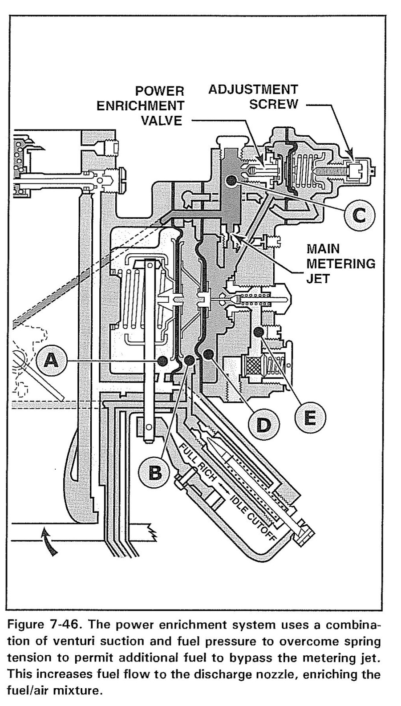
물분사 시스템(항디토네이션 분사, ADI, Anti-Detonation Injection)은 압력분사 기화기를 가진 대형 왕복엔진에서 흔했습니다. 이 시스템은 엔진이 디토네이션이나 조기점화 없이 최대 출력을 내게 했습니다. 전형적 ADI 시스템은 물과 알코올을 기화기에 분사해 연료·공기 혼합기를 변경함으로써 디토네이션을 방지했습니다. 이런 대형 왕복엔진은 보통 고출력 작동 시 다소 농후한 혼합기를 공급하도록 조정되는데, 여분의 연료가 엔진을 냉각하고 디토네이션 가능성을 줄이지만 농후한 혼합기로는 엔진이 최대 출력을 낼 수 없습니다. ADI가 설치되면 혼합기를 희박하게 조정해 엔진이 최대 출력을 내게 할 수 있습니다.Water injection (anti-detonation injection, ADI) was common on large reciprocating engines with pressure-injection carburetors, letting an engine make maximum power without detonation or preignition. A typical ADI system injected water and alcohol into the carburetor to modify the mixture and prevent detonation. These engines are normally set somewhat rich at high power—the extra fuel cools the engine and reduces detonation, but a rich mixture can't make maximum power—so with ADI the mixture can be leaned for maximum power.
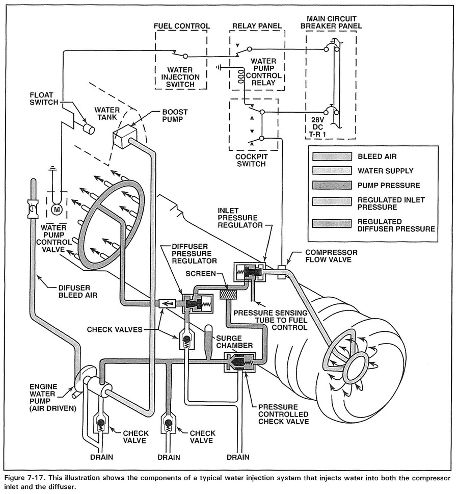
압력분사 기화기를 오버홀하거나 내부 정비를 하려면 플로 벤치와 특수 공구가 필요하므로, 정비 활동은 보통 검사, 현장 조정, 장탈·장착에 한정됩니다. 기화기가 엔진에 장착된 상태에서 플로트식 기화기와 동일한 항목 — 장착 견고성, 접합 플랜지 주변 누출, 컨트롤 링키지의 견고성·자유 움직임·스톱 접촉 — 을 점검합니다. 컨트롤이 올바로 리깅되면 엔진을 작동해 아이들 혼합비와 아이들 속도를 점검합니다. 둘 다 계량 장치 측면의 조정 나사 길이를 바꿔 수동 조정합니다.Overhauling or internal maintenance on a pressure-injection carburetor needs a flow bench and special tools, so field activity is limited to inspection, adjustment, removal, and installation. With the carburetor installed, check the same items as a float type—mounting security, leaks around the mating flange, and control linkages for security, free movement, and stop contact. If controls are rigged properly, run the engine to check idle mixture and idle speed, both adjusted manually by varying adjustment-screw lengths on the side of the metering device.
압력 기화기의 아이들 혼합비 점검은 플로트식과 같은 절차를 씁니다. 엔진이 작동 온도에서 돌아가는 동안 혼합비 컨트롤을 아이들 컷오프 쪽으로 천천히 움직이며 타코미터를 관찰합니다. 혼합비가 적절하면 엔진 속도가 약간 증가한 뒤 빠르게 떨어집니다. 매니폴드 압력 게이지가 있으면 최적 아이들 혼합비에서 엔진이 멈추기 직전 매니폴드 압력이 감소하는 것을 볼 수 있습니다. 오버홀은 플로 벤치와 정밀 시험 장비가 필요해 제조사나 승인된 수리 시설만 수행합니다. 오버홀 후 압력분사 기화기의 연료 챔버는 보통 방부 오일로 채워지므로, 엔진 장착 전 이 오일을 제거해야 하며 제조사가 전체 장치를 연료로 채우거나 담가 잔류 오일을 희석하고 모든 다이어프램·실을 적시도록 요구할 수 있습니다.Checking idle mixture on a pressure carburetor uses the same procedure as a float type: with the engine at operating temperature, slowly move the mixture control toward idle-cutoff while watching the tachometer—if set right, speed rises slightly before dropping rapidly, and a manifold-pressure gauge shows an optimum idle mixture decreasing manifold pressure just before the engine quits firing. Overhaul requires a flow bench and precision equipment, so only the manufacturer or an approved facility does it. After overhaul, the fuel chambers are usually filled with preservative oil that must be removed before installation, and the manufacturer may require filling or submerging the unit in fuel to dilute residual oil and wet all diaphragms and seals.
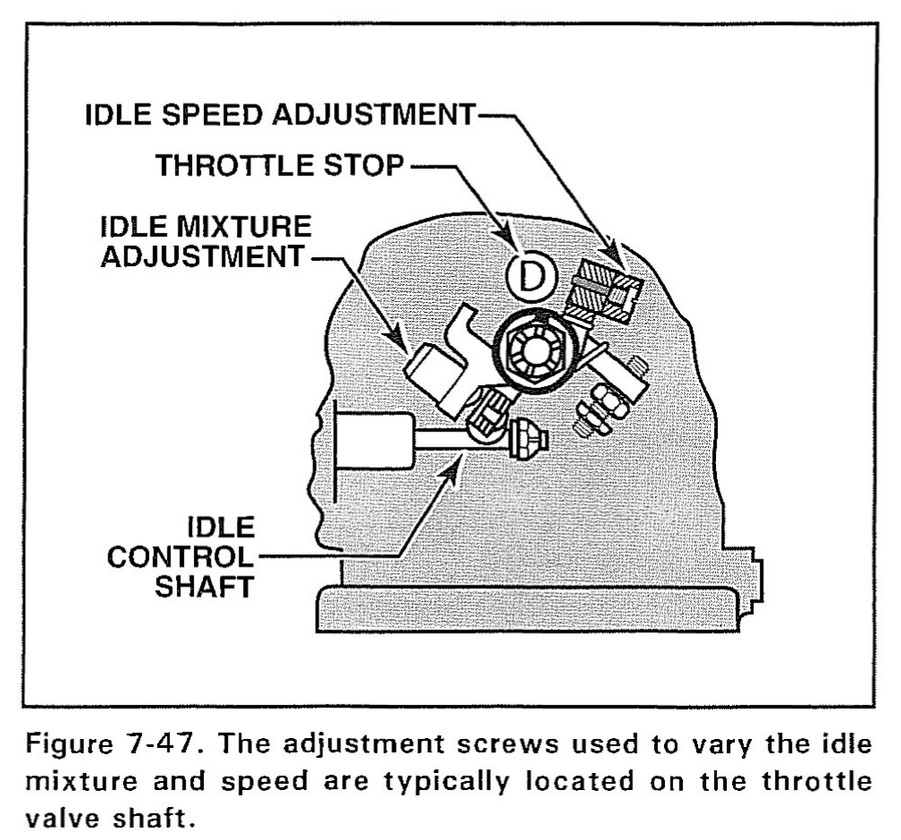
- A. 8:1.8:1.
- B. 12:1.12:1.
- C. 15:1.15:1.
- A. 고도나 온도가 증가하면 희박해진다.leaner as either the altitude or temperature increases.
- B. 고도 증가 시 농후, 온도 증가 시 희박.richer as the altitude increases and leaner as the temperature increases.
- C. 고도나 온도가 증가하면 농후해진다(richer as either the altitude or temperature increases).richer as either the altitude or temperature increases.
- A. 1만 옳다.only 1 is true.
- B. 2만 옳다.only 2 is true.
- C. 1, 2 모두 옳다(both 1 and 2 are true).both 1 and 2 are true.
- A. 엔진 급가속용 추가 연료 제공.provide extra fuel for sudden acceleration of the engine.
- B. 순항 베스트 출력 시 최대한 희박한 혼합기 유지.maintain the leanest mixture possible during cruising best power.
- C. 최대 출력 시 더 농후한 혼합기와 냉각 제공(provide a richer mixture and cooling at maximum power output).provide a richer mixture and cooling at maximum power output.
- A. 플로트 챔버 내 연료에 작용하는 압력(acting on the fuel in the float chamber).acting on the fuel in the float chamber.
- B. 기화기로 들어오는 연료의 압력.of the fuel as it enters the carburetor.
- C. 벤투리로 들어오는 공기의 압력(충격 압력).of the air as it enters the venturi (impact pressure).
- A. 최대 농후 공급, 이코노마이저로 희박화.their richest mixture delivery and leaned by means of the economizer system.
- B. 이코노마이저가 모든 속도에서 메인 공급을 보충.the economizer system to supplement the main system supply at all engine speeds above idling.
- C. 순항에서 가장 희박한 실용 공급, 고출력에서 이코노마이저로 농후화(leanest practical mixture delivery at cruising speeds and enriched by means of the economizer system at higher power settings).their leanest practical mixture delivery at cruising speeds and enriched by means of the economizer system at higher power settings.
- A. 모든 엔진 속도에 필요한 연료 공급·조절.It supplies and regulates the fuel required for all engine speeds.
- B. 순항 이상의 모든 엔진 속도에 필요한 추가 연료 공급·조절(supplies and regulates the additional fuel required for all engine speeds above cruising).It supplies and regulates the additional fuel required for all engine speeds above cruising.
- C. 모든 엔진 속도·모든 고도에 필요한 연료 조절.It regulates the fuel required for all engine speeds and all altitudes.
- A. 디스차지 노즐 출구보다 약간 높음.slightly higher than the discharge nozzle outlet.
- B. 디스차지 노즐 출구보다 약간 낮음(slightly lower than the discharge nozzle outlet).slightly lower than the discharge nozzle outlet.
- C. 디스차지 노즐 출구와 같은 레벨.at the same level as the discharge nozzle outlet.
- A. 중력 연료 공급 계통에 쓸 기화기는 연료 압력 5 psi로 시험.Use 5 pounds fuel pressure for the test if the carburetor is to be used in a gravity fuel feed system.
- B. 제트를 통한 연속 연료 흐름을 막기 위해 메인·아이들 제트를 막음.Block off the main and idle jets to prevent a continuous flow of fuel through the jets.
- C. 플로트 챔버 가장자리에서 레벨을 측정하지 않음(Do not measure the level at the edge of the float chamber).Do not measure the level at the edge of the float chamber.
- A. 플로트 니들 밸브가 제대로 안착되지 않음(float needle valve is not seated properly).float needle valve is not seated properly.
- B. 플로트 레벨이 너무 낮게 조정됨.float level is adjusted too low.
- C. 메인 에어 블리드가 막힘.main air bleed is clogged.
- A. 기화기 접합면(parting surface of the carburetor).parting surface of the carburetor.
- B. 플로트 상단.top of the float.
- C. 메인 디스차지 노즐 중심선.centerline of the main discharge nozzle.
- A. 아이들 시 체적 효율이 정상보다 높음.Engine operation at idle results in higher than normal volumetric efficiency.
- B. 아이들 시 실린더 둘레 기류가 부족해 적절한 냉각이 안 됨(at idling speeds the engine may not have enough airflow around the cylinders to provide proper cooling).Because at idling speeds the engine may not have enough airflow around the cylinders to provide proper cooling.
- C. 아이들 시 기계 효율 감소 때문.Because of reduced mechanical efficiency during idle.
- A. 이코노마이저 밸브가 제대로 작동하지 않음(Economizer valve not operating correctly).Economizer valve not operating correctly.
- B. 혼합 설정이 너무 농후.Mixture setting too rich.
- C. 매니폴드 밸브가 제대로 작동하지 않음.Manifold valve is not operating properly.
- A. 정상 미터링 힘의 작용을 보충하는 비계량 연료 챔버 내 스프링(spring in the unmetered fuel chamber to supplement the action of normal metering forces).a spring in the unmetered fuel chamber to supplement the action of normal metering forces.
- B. 아이들 범위에서 기화기를 우회하는 아이들 미터링 제트.an idle metering jet that bypasses the carburetor in the idle range.
- C. 시동·아이들 속도의 감소된 기류에 민감한 별도 부스트 벤투리.a separate boost venturi that is sensitive to the reduced airflow at start and idle speeds.
- A. 혼합 조절을 IDLE CUTOFF에 둔 채 프라이머로(primer while the mixture control is positioned at IDLE CUTOFF).primer while the mixture control is positioned at IDLE CUTOFF.
- B. 혼합 조절을 FULL-RICH 위치에 두고.mixture control in the FULL-RICH position.
- C. 혼합 조절을 FULL-LEAN 위치에 두고 프라이머로.primer while the mixture control is positioned at the FULL-LEAN position.
연료 분사 계통과 RSA 시스템 심화 📙 Jeppesen 정독
Fuel Injection Systems and the RSA System기화기는 신뢰성 있는 연료 계량 수단이지만 두 가지 주요 한계가 있습니다. 첫째, 흡기 매니폴드의 길이·형상이 달라 연료·공기 혼합기가 각 실린더에 고르게 분배되지 않습니다. 고압축비로 작동하는 현대 고성능 엔진은 실린더에 희박 혼합기가 유입되면 손상될 수 있습니다. 둘째, 압력분사식을 포함한 모든 기화기는 기화기 결빙에 취약합니다. 이 한계는 왕복 항공기 엔진에 연료 분사 계통을 도입해 극복했습니다. 매니폴드에서 연료를 미립화하는 대신, 연료 분사 계통은 각 실린더 조립체에 연료를 직접 미립화합니다.Carburetors reliably meter fuel but have two major limits. First, because intake manifolds differ in length and shape, the mixture is not evenly distributed to the cylinders, and modern high-compression engines can be damaged by a lean mixture in a cylinder. Second, all carburetors—even pressure-injection—are prone to icing. Fuel injection overcame these on reciprocating engines: instead of atomizing fuel in the manifold, it atomizes fuel directly at each cylinder assembly.
연료가 연소실에 직접 분사되면 직접 연료 분사(direct fuel injection)라 부릅니다. 이 방식은 초기 성형 엔진에 쓰였고 고른 연료 분배와 백파이어 감소 이점을 제공했습니다. 전형적 직접 분사 시스템은 대형 압력 기화기와 유사하게 정확한 연료량을 두 개의 다기통 피스톤 펌프로 계량하고, 이 펌프가 계량된 연료를 개별 실린더 연소실에 정시(timed) 고압 분출로 직접 밀어 넣습니다. 잘 작동했으나 좁은 제작 공차와 복잡한 부품 때문에 항공기에 널리 쓰기엔 비실용적이었습니다.When fuel is injected directly into the combustion chamber, it's called direct fuel injection. Used on early radial engines, it gave even distribution and less backfiring. A typical system, like a large pressure carburetor, meters fuel to two multi-cylinder piston pumps that force it into each cylinder's combustion chamber in timed, high-pressure spurts. It worked well, but close tolerances and complex parts made it impractical for wide use.
연속 흐름 연료 분사(continuous-flow fuel injection)는 왕복 항공기 엔진에서 가장 흔한 방식입니다. 연소실에서 연료·공기를 섞는 대신 각 흡기 포트에 연료를 지속적으로 분사해, 흡기 밸브가 열려 실린더로 빨려 들기 전에 연료가 기화되고 공기와 잘 섞이도록 보장합니다. 오늘날 미국제 왕복엔진 대부분에 두 가지 연속 흐름 분사 시스템이 쓰이는데, 하나는 프리시전 에어모티브 RSA 시스템, 다른 하나는 텔레다인 콘티넨탈 모터스(TCM) 시스템입니다.Continuous-flow fuel injection is the most common type on reciprocating aircraft engines. Instead of mixing in the combustion chamber, it continuously injects fuel into each intake port, ensuring fuel is vaporized and well mixed with air before being drawn into the cylinder when the intake valve opens. Two continuous-flow systems are used on most US-made reciprocating engines: the Precision Airmotive RSA system and the Teledyne Continental Motors (TCM) system.
RSA 연료 분사 시스템은 다섯 개의 주요 구성품 — 벤투리 하우징, 연료 계량 유닛, 연료 레귤레이터, 플로 디바이더, 연료 노즐 — 으로 구성됩니다. 가압된 연료가 연료 계량 유닛으로 흐르고, 아이들 레버와 혼합비 컨트롤 위치가 레귤레이터로 가는 연료를 계량합니다. 레귤레이터 내부에서 공기 계량력과 연료 계량력의 조합이 스로틀 보디를 지나는 공기량에 따라 플로 디바이더로 보내지는 연료량을 조절합니다. 벤투리 하우징은 단일 주조 알루미늄 유닛으로, 단일 벤투리(역시 주조 알루미늄)가 하우징 하단에 압입됩니다. 하우징 상단의 스로틀 밸브가 벤투리를 지나는 기류를 제어하며, 밸브 가장자리 근처에 뚫린 세 개의 구멍이 엔진 아이들에 필요한 기류를 제공합니다.The RSA system has five main components: a venturi housing, fuel metering unit, fuel regulator, flow divider, and fuel nozzles. Pressurized fuel flows to the metering unit, where idle-lever and mixture-control positions meter fuel to the regulator; inside, the combination of air-metering and fuel-metering forces regulates how much fuel goes to the flow divider based on airflow through the throttle body. The venturi housing is a single cast-aluminum unit with a cast-aluminum venturi pressed into the bottom; a throttle valve at the top controls airflow, and three holes near the valve edge provide idle airflow.
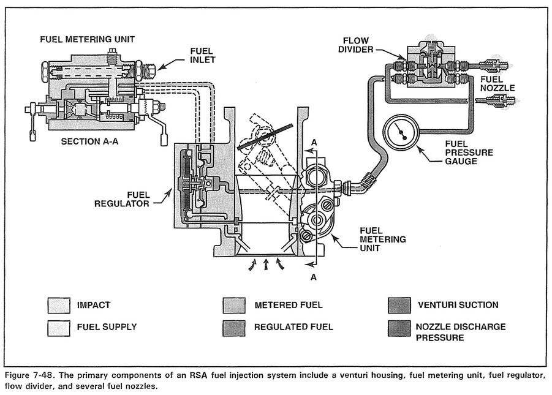
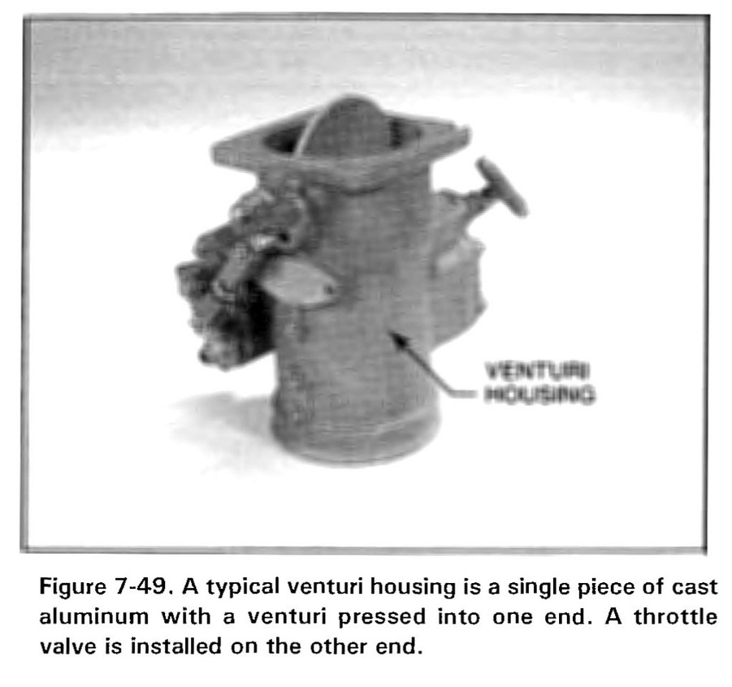
연료 계량 유닛(벤투리 하우징의 일부)은 연료 스트레이너, 혼합비 컨트롤 밸브, 아이들 밸브, 주 계량 제트, 인리치먼트 계량 제트로 구성됩니다. 혼합비·아이들 밸브는 기계적으로 작동하는 스프링 부하 평판(flat-plate) 밸브로, 계량 제트를 지나는 연료량을 제어합니다. 혼합비 밸브는 조종석 혼합비 컨트롤로, 아이들 밸브는 스로틀 밸브 샤프트에 연결된 기계적 링키지로 작동합니다. 연료 계량은 연료가 혼합비 컨트롤 밸브와 아이들 밸브를 모두 지나며 이뤄집니다. 연료가 스트레이너를 지난 뒤 혼합비 컨트롤 밸브의 포트를 통과하는데, 조종석 혼합비 컨트롤을 전진시키면 계량 제트로 이어지는 통로가 열립니다. 농후(rich) 위치에서는 혼합비 컨트롤이 만든 개구가 계량 제트보다 커서 제트가 흐름을 제한하지만, 중간 위치에서는 개구가 주 제트보다 작아 혼합비 컨트롤이 흐름 제한 장치가 됩니다. 혼합비 컨트롤 베이스의 두 번째 통로는 미계량 연료(입구 연료)를 연료 레귤레이터로 흐르게 하며, 이 미계량 연료 압력이 엔진으로 가는 연료를 조절하는 기준으로 쓰입니다.The fuel metering unit (part of the venturi housing) has a fuel strainer, mixture control valve, idle valve, main metering jet, and enrichment jet. The mixture and idle valves are mechanically actuated, spring-loaded flat-plate valves controlling fuel through the jets—the mixture valve by the cockpit control, the idle valve by linkage to the throttle shaft. Metering occurs as fuel passes both valves: after the strainer, fuel passes a port in the mixture control valve, whose passage to the jet is uncovered as the cockpit control advances. In rich, the opening exceeds the jet size so the jet limits flow; in intermediate positions, the opening is smaller than the main jet so the mixture control becomes the limiting device. A second passage in the mixture-control base sends unmetered (inlet) fuel to the regulator as a reference for regulating fuel to the engine.
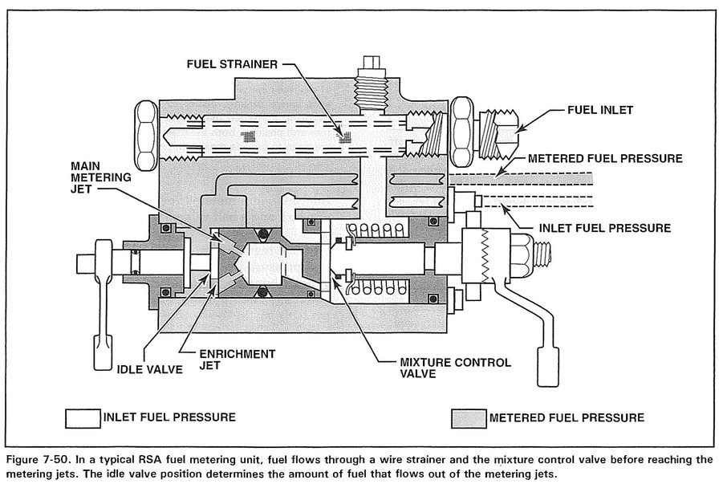
- A. 스로틀 밸브.throttle valve.
- B. 혼합 조절(mixture control).mixture control.
- C. 미터링 제트.metering jet.
- A. 혼합 조절.mixture control.
- B. 미터링 제트.metering jet.
- C. 스로틀 밸브(throttle valve).throttle valve.
- A. 스로틀 밸브.Throttle valve.
- B. 벤투리(Venturi).Venturi.
- C. 메인 미터링 제트.Main metering jet.
- A. 전기기계식.Electromechanical.
- B. 기계식.Mechanical.
- C. 유압기계식 또는 전자식(Hydromechanical or electronic).Hydromechanical or electronic.
- A. 기어식.Gear.
- B. 임펠러식.Impeller.
- C. 베인식(Vane).Vane.
RSA 연료 레귤레이터·아이들 시스템과 자동 혼합비 제어 심화 📙 Jeppesen 정독
RSA Fuel Regulator, Idle System, and Automatic Mixture ControlRSA 연료 계량 유닛에서 혼합비 컨트롤 밸브 플레이트는 위치에 따라 계량 제트로 가는 통로를 다르게 엽니다. 아이들 컷오프 위치에서는 계량 제트로 가는 통로가 완전히 막힙니다. 혼합비를 희박(lean) 설정으로 전진하면 밸브 플레이트가 주 계량 제트로 이어지는 통로를 열기 시작해 연료가 흐르기 시작합니다. 풀 리치(full rich) 위치에서는 밸브 플레이트가 두 계량 제트(주 제트·인리치먼트 제트)로 가는 통로를 모두 완전히 노출시켜 최대 연료 흐름을 허용합니다.In the RSA metering unit, the mixture-control valve plate opens the passages to the metering jets differently by position. At idle-cutoff, the passages are fully blocked. Advancing to lean begins to uncover the passage to the main metering jet and fuel starts to flow. At full rich, the valve plate fully exposes the passages to both the main and enrichment jets for maximum fuel flow.
아이들 플레이트 밸브는 스로틀이 전진함에 따라 주 제트와 인리치먼트 제트를 비례적으로 엽니다. 저출력 설정에서는 주 계량 제트의 작은 부분만 열리고, 스로틀이 전진하면 주 계량 제트가 더 열려 추가 연료를 공급하며, 스로틀이 완전히 열리면 주 제트와 인리치먼트 제트가 모두 열려 고출력 설정에 필요한 연료를 공급합니다.The idle plate valve uncovers the main and enrichment jets proportionately as the throttle advances. At low power only a small portion of the main jet is uncovered; advancing the throttle uncovers more of the main jet for additional fuel; and wide open, both the main and enrichment jets are uncovered for the fuel required at high power.
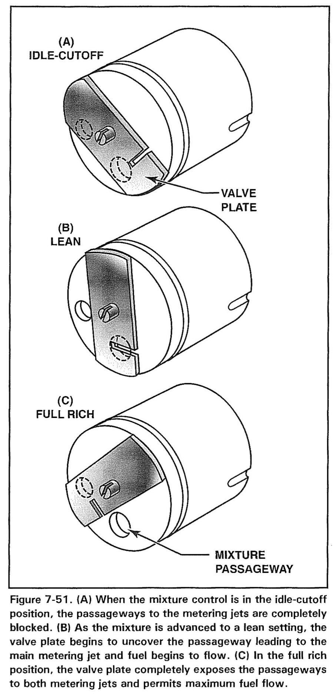
연료 레귤레이터는 엔진에 필요한 연료량을 공급합니다. 레귤레이터는 네 개의 뚜렷한 챔버(벤투리 흡입, 입구 공기, 입구 연료, 계량 연료), 두 개의 다이어프램(연료·공기), 볼 밸브로 구성됩니다. 작동 원리는 압력분사 기화기와 유사합니다. 공기가 벤투리 하우징으로 들어오면 임팩트 튜브가 이를 밀폐 챔버로 유도하고, 반대쪽 챔버는 벤투리의 저압 공기로 통기됩니다. 이 두 힘이 함께 작용해 벤투리를 지나는 공기량에 비례해 공기 다이어프램을 움직입니다. 공기 다이어프램 양단의 압력차로 생기는 힘을 공기 계량력(air metering force)이라 하며, 이 힘이 볼 밸브(서보 밸브)를 제어해 플로 디바이더로 연료를 보냅니다.The fuel regulator supplies the engine's needed fuel. It has four distinct chambers (venturi suction, inlet air, inlet fuel, metered fuel), two diaphragms (fuel and air), and a ball valve, operating like a pressure-injection carburetor. As air enters the venturi housing, impact tubes direct it to a sealed chamber while the opposing chamber vents to low-pressure venturi air; together these move the air diaphragm in proportion to airflow. The force from the pressure differential across the air diaphragm—the air metering force—controls a ball (servo) valve to send fuel to the flow divider.
공기 계량력이 볼 밸브를 열면 입구 연료 압력이 연료 다이어프램 한쪽에 작용해 밸브를 닫으려 합니다. 그러나 계량 연료가 볼 밸브를 지나 연료 챔버로 흐르면 입구 연료 압력에 대항해 연료 계량력을 만들어 공기 계량력과 균형을 이룹니다. 이 상호작용을 통해 볼 밸브는 엔진을 지나는 기류에 비례하는 압력차를 계량 제트 양단에 만듭니다.When the air metering force opens the ball valve, inlet fuel pressure acts on one side of the fuel diaphragm to close it. But as metered fuel flows past the ball valve into the fuel chamber, it opposes inlet pressure to create a fuel metering force that balances the air metering force. Through this, the ball valve creates a pressure differential across the metering jets proportional to airflow through the engine.
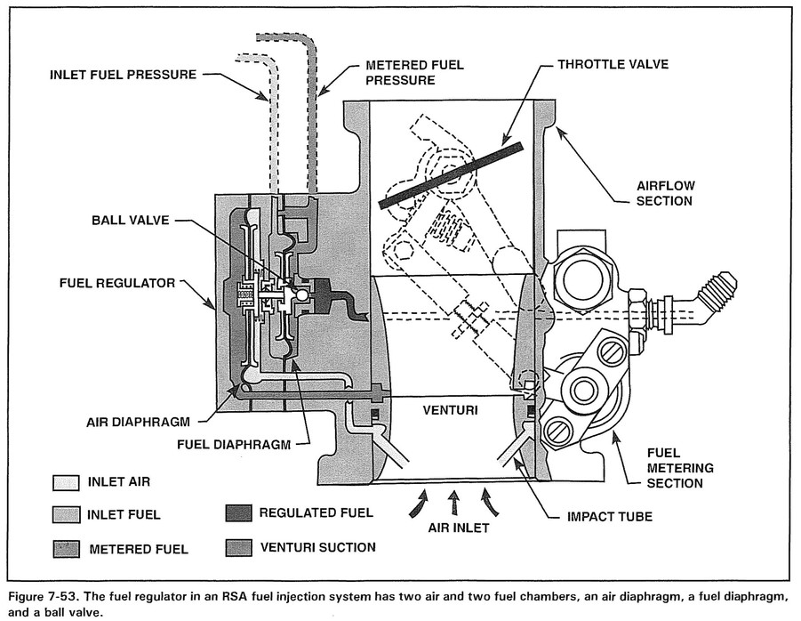
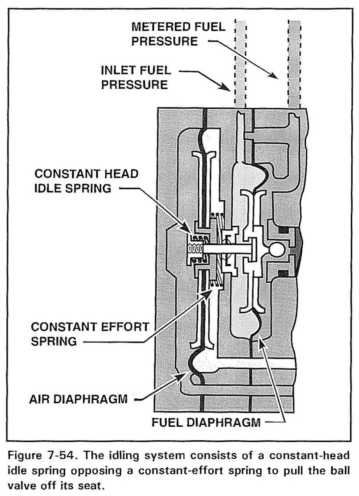
아이들에서는 엔진을 지나는 기류가 적어 공기 계량력이 볼 밸브를 열어 계량 제트 양단의 압력차를 유지하기에 부족합니다. RSA 시스템에서는 정압 아이들 스프링(constant-head idle spring)이 볼 밸브를 시트에서 떼어 두는 데 필요한 힘을 제공합니다. 아이들에서 소량의 공기만 벤투리를 지날 때 이 스프링이 밸브를 열어둡니다. 흡기 유량이 증가하면 공기 다이어프램이 스프링을 압축하고, 다이어프램 부싱이 볼 밸브 샤프트 끝의 스톱에 닿으면 공기 다이어프램이 연료 조절을 넘겨받습니다. 아이들과 순항 간 부드러운 전환을 위해 정력(constant-effort) 스프링이 다이어프램을 중립 위치로 예압합니다.At idle, low airflow means the air metering force is insufficient to open the ball valve and hold a differential across the jets. In the RSA system a constant-head idle spring provides the force to hold the ball valve off its seat; with only a little air through the venturi, the spring holds the valve open. As intake airflow increases, the air diaphragm compresses the spring, and when the diaphragm bushing contacts the stop on the ball-valve shaft, the air diaphragm takes over fuel regulation. A constant-effort spring preloads the diaphragm to neutral for a smooth idle-to-cruise transition.
조종사 부담을 줄이기 위해 일부 RSA 시스템에는 자동 혼합비 제어(AMC)가 수동 혼합비 컨트롤과 병렬로 설치됩니다. 전형적 시스템은 밀폐된 벨로우즈로 역테이퍼 니들을 움직여 임팩트 공기 챔버와 벤투리 공기 챔버 사이 에어블리드 오리피스 크기를 변화시킵니다. 헬륨을 채운 벨로우즈는 공기 밀도 변화에 따라 팽창·수축합니다. 항공기가 상승하면 공기 밀도가 낮아져 벨로우즈가 팽창하고, 벨로우즈가 역테이퍼 밸브에 연결되어 있어 팽창하면 니들 밸브를 시트에서 밀어내 블리드 공기 포트를 엽니다. 이로써 공기 다이어프램 압력차가 줄어 볼 밸브가 부분적으로 닫히고 연소용 혼합기가 희박해집니다.To reduce pilot workload, some RSA systems add an automatic mixture control (AMC) in parallel with the manual control. A typical AMC uses a sealed bellows to move a reverse-tapered needle, varying the air-bleed orifice size between the impact and venturi air chambers. The helium-filled bellows expands and contracts with air density: as the aircraft climbs, density falls and the bellows expands, pushing the reverse-tapered needle off its seat to open the bleed port. The reduced air-diaphragm differential partially closes the ball valve, leaning the mixture for combustion.
- A. 메인·아이들 제트로 가는 연료 통로가 밸브로 차단된다.The fuel passages to the main and idle jets will be closed by a valve.
- B. 플로트 챔버가 부압 구역으로 벤트된다(float chamber will be vented to a negative pressure area).The float chamber will be vented to a negative pressure area.
- C. 아이들 제트로 가는 연료 통로가 밸브로 차단된다.The fuel passage to the idle jet will be closed by a valve.
RSA 플로 디바이더·인젝터 노즐과 TCM 연료 분사 시스템 심화 📙 Jeppesen 정독
RSA Flow Divider, Injector Nozzles, and the TCM System계량 연료는 레귤레이터에서 유연 호스를 지나 플로 디바이더로 흐릅니다. 플로 디바이더는 다이어프램 작동식 밸브와 스프링으로 구성되며 보통 엔진 상단 중앙에 설치됩니다. 연료 압력이 없을 때는 대기압과 스프링 압력이 밸브를 닫아둡니다. 연료 압력이 이 힘을 이기면 밸브가 열려 연료가 플로 디바이더로 들어가고, 여기서 1/8인치 스테인리스강 튜브(연료 인젝터 라인)를 통해 각 인젝터 노즐로 흐릅니다. 조종석 압력 게이지용 피팅이 추가로 제공되는데, 플로 디바이더에서 압력을 측정하면 지시 압력이 모든 인젝터 노즐 양단의 총 압력 강하를 반영합니다. 게이지 압력은 노즐을 지나는 연료 흐름으로 생긴 압력 강하에 정비례합니다.Metered fuel flows from the regulator through a flexible hose to the flow divider—a diaphragm-operated valve and spring, usually mounted centrally atop the engine. With no fuel pressure, atmospheric and spring pressures hold the valve closed; when fuel pressure overcomes them, the valve opens and fuel enters the flow divider, then flows through 1/8-inch stainless tubing (fuel injector lines) to each nozzle. A fitting for a cockpit pressure gauge is provided: taking pressure at the flow divider, the indicated pressure reflects the collective pressure drop across all nozzles and is directly proportional to the drop from fuel flow through the nozzles.
아이들 이상의 모든 속도에서 노즐의 작은 개구가 실린더로 흐르는 연료량을 제한합니다. 이로 인해 연료 인젝터 라인에 배압(back-pressure)이 형성되어 연료 계량력에 영향을 줍니다. 엔진 속도가 아이들 이상이면 노즐이 연료 압력을 제어합니다. 아이들 속도에서는 노즐을 지나는 연료가 배압을 만들기에 부족하므로, 대신 다이어프램 공기 측의 스프링이 밸브를 열 충분한 압력이 생길 때까지 플로 디바이더 밸브를 닫아둡니다. 계량 연료 압력이 스프링 장력을 이기면 플로 디바이더가 열려 이 저유량 조건에서 실린더에 연료를 고르게 분배합니다. 이 배치는 또한 혼합비 컨트롤이 아이들 컷오프 위치일 때 노즐로의 확실한 연료 차단을 제공하며, 인젝터 라인에 연료를 유지해 베이퍼 록 가능성을 줄입니다.Above idle, a small opening in the nozzles restricts fuel into the cylinders, building back-pressure in the injector lines that affects fuel metering force; above idle, the nozzles control fuel pressure. At idle, fuel through the nozzles is insufficient to create back-pressure, so a spring on the air side of the diaphragm holds the flow-divider valve closed until adequate pressure unseats it. Once metered pressure overcomes spring tension, the flow divider opens and distributes fuel evenly at low flow. This also gives a positive fuel cutoff at idle-cutoff and keeps fuel in the lines to reduce vapor lock.
RSA 시스템은 실린더 헤드 흡기 포트에 나사로 결합되는 에어블리드 노즐을 씁니다. 각 노즐은 계량 오리피스, 에어블리드 구멍, 에멀전 챔버가 있는 황동 몸체로 구성됩니다. 에어블리드 구멍으로 오염물이 빨려 들지 않도록 미세 메시 금속 스크린을 압착 강철 슈라우드로 지지합니다. 과급 엔진에는 노즐이 어퍼 데크 공기 압력을 받아 연료를 유화하도록 연장부가 제공됩니다. 각 노즐의 계량 오리피스(제트)는 특정 유량을 ±2% 정확도로 제공하도록 교정됩니다. 제트 크기는 가용 연료 입구 압력과 엔진 최대 연료 요구량의 함수이며, 같은 형식의 노즐은 실린더·엔진 간 호환됩니다. 제트 크기는 에어블리드 구멍 반대쪽 노즐 육각 평면에 한 글자로 스탬프됩니다.The RSA system uses air-bleed nozzles threaded into cylinder-head intake ports. Each is a brass body with a metering orifice, an air-bleed hole, and an emulsion chamber; a fine mesh screen on a pressed-steel shroud keeps contaminants from the bleed hole. Turbocharged engines get an extension so the nozzle receives upper-deck air to emulsify fuel. Each metering orifice (jet) is calibrated to a specific flow within ±2 percent; jet size is a factor of inlet pressure and maximum fuel demand, nozzles of the same type interchange between cylinders or engines, and jet size is stamped as a single letter on the hex flat opposite the bleed hole.
연료 분사 시스템의 아이들 혼합비 조정은 연결 링키지 길이로 정합니다. 아이들 혼합비가 너무 희박하면 링키지를 늘려 연료를 추가하고, 너무 농후하면 링키지를 줄여 연료를 감소시킵니다. 아이들 혼합비를 조정한 뒤 고속으로 운전한 다음 출력을 줄여 아이들 혼합비 설정을 재확인합니다. 아이들 속도 조정이 필요하면 스프링 부하 아이들 나사를 돌리는데, 속도가 너무 낮으면 시계 방향, 너무 높으면 반시계 방향으로 돌립니다.Idle mixture on the injection system is set by the connecting linkage length: too lean, lengthen it to add fuel; too rich, shorten it. After adjusting, run at high speed then reduce power to recheck. For idle speed, rotate the spring-loaded idle screw—clockwise if too low, counter-clockwise if too high.
RSA 시스템이 연료·공기 계량력을 모두 쓰는 반면, 텔레다인 콘티넨탈 모터스(TCM) 시스템은 연료 계량력만으로 연료를 계량합니다. TCM 시스템의 기본 구성품은 엔진 구동 인젝터 펌프, 연료/공기 컨트롤 유닛, 연료 매니폴드 밸브, 인젝터 노즐입니다. TCM 인젝터 펌프는 샤프트 구동 베인 펌프로, 펌프 하우징에 베이퍼 세퍼레이터 챔버, 가변 오리피스, 조정식 릴리프 밸브, 베이퍼 이젝터, 바이패스 밸브를 포함합니다. 인젝터 펌프로 들어온 연료는 베이퍼 세퍼레이터 챔버에서 소용돌이쳐 증기를 제거합니다. 베인 펌프가 회전당 특정량을 공급하므로 연료를 펌프 입구로 되돌리는 리턴 통로가 있고, 리턴 라인의 가변 오리피스가 펌프 압력을 제어합니다. 오리피스가 커지면 펌프 출력 압력이 낮아지고 작아지면 높아집니다.Where the RSA system uses both fuel and air metering forces, the Teledyne Continental Motors (TCM) system uses only a fuel metering force. Its basic components are an engine-driven injector pump, a fuel/air control unit, a fuel manifold valve, and injector nozzles. The TCM injector pump is a shaft-driven vane pump whose housing holds a vapor-separator chamber, a variable orifice, an adjustable relief valve, a vapor ejector, and a bypass valve. Incoming fuel swirls in the vapor separator to remove vapor; since the vane pump delivers a set quantity per revolution, a return passage sends fuel back to the inlet, and a variable orifice in the return line controls pump pressure—larger orifice, lower output; smaller orifice, higher output.
조정식 오리피스 설정은 엔진이 순항 이상에서 작동할 때 연료 흐름을 잘 제어합니다. 순항 이하에서는 오리피스가 일정 출력 압력을 유지하기에 불충분한 제한이 되므로, 오리피스 하류의 스프링 부하 압력 릴리프 밸브가 저출력에서 연료 흐름을 제어하며, 릴리프 밸브가 제공하는 저항이 인젝터 펌프가 일정 출력 압력을 유지하게 합니다. 과급 엔진에서 스로틀을 급격히 전진하면 인젝터 펌프가 가속해 터보차저가 추가 공기를 공급하기 전에 추가 연료를 공급하는데, 이를 보정하지 않으면 혼합기가 너무 농후해져 엔진이 흔들립니다. 이를 바로잡기 위해 인젝터 펌프는 고도 보상 에너로이드 벨로우즈(altitude-compensating aneroid bellows)로 리턴 라인의 계량 오리피스를 제어합니다. 에너로이드는 어퍼 데크 압력(터보차저 배출 압력)에 둘러싸입니다.The adjustable orifice controls flow well at or above cruise, but below cruise it's an insufficient restrictor to hold constant output, so a spring-loaded relief valve downstream controls low-power flow, its resistance letting the pump maintain constant pressure. On a turbocharged engine, rapidly advancing the throttle accelerates the pump, supplying extra fuel before the turbocharger supplies extra air; uncorrected, the mixture becomes too rich and the engine falters. To correct this, the pump uses an altitude-compensating aneroid bellows to control the return-line metering orifice, with the aneroid surrounded by upper-deck (turbocharger discharge) pressure.
- A. RPM 먼저, 그다음 매니폴드압Reduce the RPM, then the manifold pressure.
- B. 매니폴드압 먼저, 그다음 스로틀 지연으로 RPM 보정Reduce the manifold pressure, then retard the throttle to obtain the correct RPM.
- C. 매니폴드압 먼저, 그다음 RPMReduce the manifold pressure, then the RPM.
- A. RPM을 프로펠러로 줄이기 전에 매니폴드압을 스로틀로 줄임manifold pressure is reduced with the throttle control before the RPM is reduced with the propeller control.
- B. RPM을 스로틀로 줄이기 전에 매니폴드압을 프로펠러로 줄임manifold pressure is reduced with the propeller control before the RPM is reduced with the throttle control.
- C. 매니폴드압을 스로틀로 줄이기 전에 RPM을 프로펠러로 줄임RPM is reduced with the propeller control before the manifold pressure is reduced with the throttle control.
- A. 플로트 챔버에 저압(흡기 매니폴드) 공기를 도입(introducing low pressure (intake manifold) air into the float chamber).introducing low pressure (intake manifold) air into the float chamber.
- B. 연료 선택 밸브를 OFF로.turning the fuel selector valve to OFF.
- C. 니들과 시트의 양압 밀폐로.the positive closing of a needle and seat.
- A. 급가속 시 과도하게 농후한 혼합기 방지(prevent an overly rich mixture during sudden acceleration).prevent an overly rich mixture during sudden acceleration.
- B. 고고도에서 디토네이션 방지.prevent detonation at high altitudes.
- C. 급가속 시 혼합기를 농후하게 하는 수단 제공.provide a means of enriching the mixture during sudden acceleration.
- A. 원할 때 최대 추력 출력을 얻기 위해(obtain maximum thrust output when desired).To obtain maximum thrust output when desired.
- B. 파워 레버를 올바로 위치시키기 위해.To properly position the power levers.
- C. 아이들 RPM을 조정하기 위해.To adjust the idle RPM.
- A. 보상 흐름 밸브.compensated-flow valves.
- B. 가압 릴리프 밸브.pressurized-relief valves.
- C. 밸런스드 타입 릴리프 밸브(balanced-type relief valves).balanced-type relief valves.
- A. 바이패스 밸브 조정 스크루.bypass valve adjusting screw.
- B. 릴리프 밸브 조정 스크루(relief valve adjusting screw).relief valve adjusting screw.
- C. 엔진 구동 연료 펌프 조정 스크루.engine-driven fuel pump adjusting screw.
- A. 1만 옳다.only 1 is true.
- B. 2만 옳다.only 2 is true.
- C. 1, 2 모두 옳다(both 1 and 2 are true).both 1 and 2 are true.
TCM 연료/공기 컨트롤 유닛·정비와 전자제어 연료분사(FADEC) 심화 📙 Jeppesen 정독
TCM Fuel/Air Control Unit, Maintenance, and FADEC과급 엔진의 TCM 인젝터 펌프에서 어퍼 데크 압력(터보차저 배출 압력)이 변동하면 에너로이드가 가변 제한기를 움직여 출력 연료 압력을 어퍼 데크 압력에 비례해 변화시킵니다. 베이퍼 챔버의 과잉 연료 증기를 제거하기 위해 일부 과잉 출력 연료가 챔버 상단의 베이퍼 이젝터로 흐르는데, 베이퍼 이젝터는 베이퍼 챔버로 열린 연료 통로의 제한부로, 연료가 지나며 생긴 저압이 증기를 챔버에서 빨아내 연료 탱크로 되돌립니다. 바이패스 체크 밸브는 시동 시 항공기 부스트 펌프로 가압된 연료가 연료 컨트롤로 흐르게 하지만, 엔진 구동 인젝터 펌프 압력이 부스트 펌프를 넘으면 체크 밸브가 닫혀 인젝터 펌프만 연료 컨트롤에 압력을 공급합니다. 인젝터 펌프 고장에 대비해 펌프 구동 샤프트에는 시어 섹션이 있고, 대부분 엔진 구동부와의 약간의 정렬 오차를 보정하는 루즈핏 커플링을 포함합니다.On a turbocharged TCM injector pump, as upper-deck (turbocharger discharge) pressure fluctuates, the aneroid moves a variable restrictor, varying output fuel pressure proportionally with upper-deck pressure. To remove excess vapor, some excess fuel flows through a vapor ejector at the top of the vapor chamber—a restriction whose low-pressure area draws vapor out and returns it to the tanks. The bypass check valve lets boost-pump fuel reach the fuel control for starting, but once the engine-driven pump exceeds boost-pump pressure, the check valve closes and only the injector pump supplies pressure. A shear section on the drive shaft protects against pump failure, and most pumps use a loose-fit coupling to compensate for slight misalignment.
연료/공기 컨트롤 유닛은 엔진 흡기 매니폴드에 장착됩니다. TCM 시스템은 공기 계량력을 쓰지 않으므로 공기 스로틀 조립체에 벤투리가 없습니다. 연료 컨트롤 조립체는 스로틀 조립체에 부착되며, 청동 몸체에 혼합비 밸브와 연료 계량 밸브를 수용합니다. 두 밸브는 오일 함침 부싱에서 회전하는 스테인리스강 로터리 밸브입니다. 각 밸브 끝은 연료 컨트롤 유닛 중앙의 고정 청동 계량 플러그에 맞닿아 회전하는데, 이 플러그에는 엔진으로 가는 연료를 계량하는 연료 계량 제트가 있습니다. 계량 플러그에는 연료 입구와 연료 리턴 출구를 연결하는 통로, 혼합비 컨트롤 밸브 챔버와 연료 계량 밸브 챔버를 연결하는 두 번째 통로도 있습니다. TCM 연료 컨트롤 유닛의 혼합비 밸브는 연료를 계량 제트나 연료 펌프로 보내는 가변 선택 밸브 역할을 합니다.The fuel/air control unit mounts on the intake manifold. Because the TCM system uses no air metering force, the air throttle assembly has no venturi. The fuel control assembly attaches to the throttle assembly; its bronze body houses a mixture valve and a fuel metering valve, both stainless-steel rotary valves turning in oil-impregnated bushings. Each valve end rotates against a fixed bronze metering plug in the center, which contains a metering jet that meters fuel to the engine, plus a passage connecting fuel inlet to return outlet and a second connecting the mixture-valve chamber to the metering-valve chamber. The mixture valve acts as a variable selector directing fuel to the metering jet or the pump.
연료가 혼합비 밸브를 지난 뒤 계량 제트로 흐르며, 연료 계량 밸브 위치가 주 계량 제트에서 나오는 연료량을 결정합니다. 연료 계량 밸브의 밸브 플레이트는 스로틀 전진에 따라 주 제트 출구를 비례적으로 엽니다. 저출력에서는 주 계량 제트의 작은 부분만 열리고, 스로틀 전진 시 더 열려 추가 연료를 공급하며, 스로틀이 완전히 열리면 완전히 열린 주 제트가 최대 연료를 공급합니다.After the mixture valve, fuel flows through the metering jet, and the fuel-metering-valve position determines how much flows from the main jet. Its valve plate proportionately uncovers the main jet outlet as the throttle advances—only a small portion at low power, more as it advances, and fully uncovered at wide-open throttle for maximum fuel.
연료 분사 시스템의 아이들 혼합비 점검은 엔진이 작동 온도에서 돌아가는 동안 혼합비 컨트롤을 아이들 컷오프 쪽으로 천천히 움직이며 관찰하는데, 적절히 조정되면 엔진 속도가 약간 증가한 뒤 빠르게 떨어지고, 매니폴드 압력 게이지로는 엔진이 멈추기 직전 매니폴드 압력이 감소합니다. 혼합비가 너무 희박·농후하면 연결 링키지 길이로 아이들 연료 흐름을 조정하고 매번 재확인합니다. 아이들 속도는 스프링 부하 아이들 나사로 조정합니다. 미계량 연료 압력·아이들 혼합비·아이들 속도가 제조사 한계 내에 들면 고출력 계량 연료 압력을 점검합니다. 지상 작동 중 전출력을 내지 못하면 제조사 공표 성능치에 보정 계수를 적용해야 하며, 고도 보상 연료 펌프를 가진 엔진(예: IO-360-ES)이나 지상에서 전출력이 안 나올 때는 연료 셋업·엔진 성능 확인을 위한 비행 시험이 필요합니다.To check idle mixture on an injection system, slowly move the mixture control toward idle-cutoff at operating temperature: if set right, speed rises slightly then drops rapidly, and a manifold-pressure gauge shows a decrease just before the engine quits. If too lean or rich, adjust idle flow via the linkage length and recheck each time; adjust idle speed with the spring-loaded idle screw. Once unmetered pressure, idle mixture, and idle speed are within limits, check high-power metered pressure. If full static power isn't reached on the ground, apply a conversion factor to published numbers, and for altitude-compensating-pump engines (like the IO-360-ES) or whenever full power isn't attained on the ground, a flight test is required.
연료 분사 시스템을 효과적으로 트러블슈팅하려면 시스템과 그 역할을 이해해야 하며, 거친 엔진 작동의 원인이 항상 연료 분사 시스템이라고 단정해서는 안 됩니다. 점화나 흡기 계통의 불일치도 거친 작동을 유발할 수 있습니다. 연료 분사 시스템은 기화기처럼 엔진 오버홀 시 함께 오버홀하며, 특수 공구·플로 벤치·전문 교육이 필요해 대부분 제조사나 특별 장비를 갖춘 승인 수리소가 수행합니다.Effective troubleshooting requires understanding the system's role; don't assume the fuel injection system causes every rough-running engine, since ignition or induction faults can too. Like carburetors, injection systems are overhauled during engine overhaul, needing special tools, flow benches, and training, so most overhauls are by the manufacturer or an approved repair station.
전자제어 연료 분사 시스템의 사용이 늘고 있습니다. 엔진 센서가 컴퓨터에 정보를 제공해 각 실린더의 매 연소마다 이상적인 공기/연료 혼합비를 결정하고, 실린더 조립체의 솔레노이드 밸브가 분사 연료량을 제어합니다. 전자제어 연료 분사는 보통 전자식 통합 엔진 제어(FADEC, Full Authority Digital Engine Control) 시스템의 일부로, 연료뿐 아니라 점화도 컴퓨터 제어됩니다. 공기/연료 혼합비와 점화 시기가 지속적으로 조정되어 각 실린더가 항상 최고 성능·효율로 작동하며, 비행 중 조종사의 혼합비 조작이 필요 없어 조종사 혼합비 컨트롤 자체가 없습니다. 이 시스템은 JET A와 100LL 가솔린 엔진에 쓰이며, 데이터 로깅 기능으로 엔진 성능 데이터를 저장해 정비사가 다운로드·분석하여 성능 추이 감시와 결함 진단에 활용합니다. TCM PowerLink FADEC는 전자 제어 유닛(ECU) 하단의 마이크로프로세서 회로 기판으로 연료 분사를 제어하며, 엔진 속도·매니폴드 압력·연료 압력·스로틀 위치·실린더 헤드 온도(CHT)·배기가스 온도(EGT) 센서 등의 정보를 처리합니다. 전기 계통 고장 시 지속 작동을 위해 보통 백업 배터리인 2차 전원이 필요합니다.Electronically controlled fuel injection is increasing: engine sensors feed a computer that sets the ideal air/fuel mixture for each combustion event, with a solenoid valve at each cylinder controlling injected fuel. It's typically part of a Full Authority Digital Engine Control (FADEC) system, where both fuel and ignition are computer-controlled; mixture and timing are continuously adjusted for peak performance, needing no pilot mixture input—there is no pilot mixture control. Used on JET A and 100LL engines, these systems log engine data a technician can download and analyze for trend monitoring and diagnosis. The TCM PowerLink FADEC controls injection with microprocessor boards in the ECU base, processing engine speed, manifold pressure, fuel pressure, throttle position, CHT, and EGT sensor data, and needs a second power supply (usually a backup battery) for continued operation if the electrical system fails.
- A. 공기 온도.air temperature.
- B. 기압.barometric pressure.
- C. 공기 속도(air velocity).air velocity.
- A. 공연비를 과도하게 농후하게 함excessively enriching the air-fuel mixture.
- B. 공연비를 과도하게 희박하게 함excessively leaning the air-fuel mixture.
- C. 연료 기화 감소reducing fuel vaporization.
- A. 혼합 조절 밸브가 완전히 닫힘.Mixture control valve fully closed.
- B. 결함 있는 가속 계통.Defective accelerating system.
- C. 자동 혼합 조절이 신장된 위치에 고착(Automatic mixture control stuck in the extended position).Automatic mixture control stuck in the extended position.
- A. 농후 혼합기(rich mixture).a rich mixture.
- B. 희박 혼합기.a lean mixture.
- C. 희박 공연비로 인한 백파이어.backfire due to lean air-fuel ratio.
- A. 실린더 헤드 온도 상승(increase in cylinder head temperature).an increase in cylinder head temperature.
- B. 높은 오일 압력.high oil pressure.
- C. 배기를 통한 백파이어.backfiring through the exhaust.
- A. 기화기에서 연료 탱크로 돌아가는 연료량이 증가한다(amount of fuel returning to the fuel tank will be increased).The amount of fuel returning to the fuel tank will be increased.
- B. 혼합 조절을 IDLE CUTOFF로 둔 뒤에도 엔진이 계속 작동한다.The engine will continue to run after the mixture control is placed in IDLE CUTOFF.
- C. 모든 엔진 속도에서 농후 혼합기가 발생한다.A rich mixture will occur at all engine speeds.
- A. 애프터파이어링.Afterfiring.
- B. 시동 중 킥백.Kickback during start.
- C. 백파이어링(Backfiring).Backfiring.
- A. 압축기 입구 압력.Compressor inlet pressure.
- B. 압축기 입구 온도.Compressor inlet temperature.
- C. 대기 습도(Ambient humidity).Ambient humidity.
- A. 이륙 시에만 작동.operate during takeoff only.
- B. 주로 연료 이송에 사용.are primarily used for fuel transfer.
- C. 엔진 펌프에 양압 연료 흐름을 제공(provide a positive flow of fuel to the engine pump).provide a positive flow of fuel to the engine pump.
- A. 여분 연료를 메인 탱크로 되돌림.To divert the excess fuel back to the main tank.
- B. 직렬로 연결된 다른 펌프의 연료 흐름을 손상·비작동 펌프가 막는 것을 방지(prevent a damaged or inoperative pump from blocking the fuel flow of another pump in series with it).To prevent a damaged or inoperative pump from blocking the fuel flow of another pump in series with it.
- C. 펌프 압력측에서 입구측으로 여분 연료 우회.To divert the excess fuel from the pressure side of the pump to the inlet side of the pump.
- A. 파열된 연료 펌프 릴리프 밸브 다이어프램.a ruptured fuel pump relief valve diaphragm.
- B. 고착된 연료 펌프 릴리프 밸브(sticking fuel pump relief valve).a sticking fuel pump relief valve.
- C. 연료 펌프 릴리프 밸브 보디의 공기 누설.an air leak at the fuel pump relief-valve body.
![Figure 7]()
- A. 엔진 구동 펌프에 가압 연료 공급.To supply fuel under pressure to the engine-driven pump.
- B. 메인 탱크에서 부스트 펌프 섬프로 연료 이송을 돕기 위해(assist in the transfer of fuel from the main tank to the boost pump sump).To assist in the transfer of fuel from the main tank to the boost pump sump.
- C. 부스트 펌프 섬프에서 윙 탱크로 연료 이송.To transfer fuel from the boost pump sump to the wing tank.
터빈 연료 노즐과 가압·덤프(P&D) 밸브 심화 📙 Jeppesen 정독
Turbine Fuel Nozzles and the Pressurization & Dump Valve터빈 엔진의 일부 연료 노즐은 연료를 기화하는 베이퍼라이징(vaporizing) 노즐입니다. 어떤 것은 T자형으로 두 개의 출구를 제공하며, 연료와 공기가 노즐 몸체로 들어와 두 개의 기화 튜브에서 혼합·기화된 뒤 연소실로 분사됩니다. 베이퍼라이징 노즐의 단점은 시동에 효과적인 분무 패턴을 제공하지 못하는 것입니다. 이를 완화하기 위해 시동을 돕는 소형 미립화 분무 노즐 세트를 추가할 수 있는데, 이 계통을 일반적으로 프라이머(primer) 또는 시동 연료 계통이라 합니다. 콩코드 SST의 올림푸스 엔진은 별도의 프라이머 연료 노즐과 함께 베이퍼라이징 연료 노즐을 사용했습니다.Some turbine fuel nozzles are vaporizing nozzles that vaporize the fuel; some are T-shaped with two outlets, where fuel and air enter the body and are mixed and vaporized in two tubes before injection into the combustor. Their shortcoming is not providing an effective spray pattern for starting, so a set of small atomizing spray nozzles may be added to aid starting—generally called a primer or starting fuel system. The Concorde SST's Olympus engine used vaporizing nozzles with separate primer nozzles.
정상 작동하는 연료 노즐은 화염을 라이너 중앙에 유지하는 분무 패턴을 만듭니다. 내부 통로나 에어블리드 구멍이 막히면 분무 패턴이 왜곡되거나 미립화가 불완전해질 수 있습니다. 분무 패턴 왜곡이 생기면 연소 화염이 연소 라이너에 닿을 수 있습니다. 또 다른 바람직하지 않은 상태는 연료가 제대로 미립화되지 않아 타는 연료 줄기가 연소실을 넘어 터빈 부품에 부딪히는 것으로, 이를 핫 스트리킹(hot streaking)이라 하며 즉시 시정해야 합니다. 이 상태가 발생하면 타는 연료가 닿는 부품에 눈에 보이는 줄무늬를 남깁니다.A normally functioning nozzle produces a spray pattern holding the flame in the center of the liner. A plugged internal passage or air-bleed hole can distort the pattern or cause incomplete atomization; a distorted pattern can let the flame contact the liner. Another undesirable condition is fuel that doesn't atomize properly, sending a stream of burning fuel past the combustor onto turbine components—called hot streaking, which must be corrected immediately and leaves visible streaks on the parts it contacts.
가압·덤프 밸브(P&D 밸브, Pressurization and Dump valve)는 이중 라인 듀플렉스(duplex) 노즐을 쓰는 연료 계량 시스템에 자주 포함됩니다. P&D 밸브의 작동은 두 가지입니다: 1차·2차 연료 매니폴드의 연료를 가압하고, 엔진 정지 시 두 매니폴드의 모든 연료를 비우거나 덤프합니다. 이를 위해 전형적 P&D 밸브는 스프링 부하 가압 밸브와 덤프 밸브로 구성됩니다.A pressurization and dump valve (P&D valve) is frequently included in metering systems with dual-line duplex nozzles. It does two things: it pressurizes fuel in the primary and secondary manifolds, and it empties (dumps) all fuel in both manifolds at shutdown. To do this, a typical P&D valve has a spring-loaded pressurizing valve and a dump valve.
엔진 시동을 위해 파워 레버를 열면 연료 컨트롤 유닛에서 압력 신호가 P&D 밸브로 전달되어 덤프 포트를 닫습니다. 계량 연료 압력이 입구 체크 밸브를 열 만큼 충분히 형성되면 연료가 P&D 밸브로 흘러 입구 스크린을 지나 1차 연료 매니폴드를 가압해 시동합니다. 엔진이 시동되어 지상 아이들보다 약간 위로 가속하면 계량 연료 압력이 증가해 가압 밸브를 닫아두던 스프링 압력을 이기고 2차 매니폴드로 연료가 흐르기 시작합니다. 이 시점에 두 매니폴드가 모두 가압되어 듀플렉스 연료 노즐의 두 오리피스로 연료가 나옵니다.When the power lever opens for start, a pressure signal from the fuel control unit goes to the P&D valve and closes the dump port. When metered pressure builds enough to open the inlet check valve, fuel flows in through an inlet screen and pressurizes the primary manifold for starting. As the engine starts and accelerates slightly above ground idle, metered pressure increases, overcomes the spring holding the pressurizing valve closed, and fuel flows into the secondary manifold—now both manifolds are pressurized and fuel exits both orifices of the duplex nozzle.
조종석 연료 차단 레버를 차단 위치로 옮기면 연료 컨트롤 압력 신호가 제거됩니다. 스프링 압력이 덤프 밸브와 덤프 포트를 열고, 동시에 덤프 밸브가 두 연료 매니폴드로의 연료 흐름을 차단합니다. 연료 입구가 막힌 상태로 매니폴드에 남은 연료가 덤프 포트로 배출되어 계통 밖으로 나갑니다. 이렇게 엔진 정지 시 매니폴드를 비우면 잔류 연료가 뜨거운 엔진 열로 코킹(carbon 침전)되는 것을 막습니다.When the cockpit cutoff lever moves to cutoff, the fuel-control signal is removed. Spring pressure opens the dump valve and dump port while the dump valve blocks flow to both manifolds; with the inlet blocked, remaining manifold fuel drains out the dump port. Emptying the manifolds at shutdown prevents residual fuel from coking (carbon deposits) in the hot engine.
- A. 엔진 정지 직전 연료 매니폴드로 가는 연료 흐름을 차단하고 매니폴드 연료를 연소실로 덤프해 태움.cuts off fuel flow to the engine fuel manifold and dumps the manifold fuel into the combustor to burn just before the engine shuts down.
- B. 엔진 정지 시 잔열로 인한 연료 끓음과 라인 퇴적을 막기 위해 엔진 매니폴드 라인을 비움(drains the engine manifold lines to prevent fuel boiling and subsequent deposits in the lines as a result of residual engine heat).drains the engine manifold lines to prevent fuel boiling and subsequent deposits in the lines as a result of residual engine heat (at engine shutdown).
- C. 급격한 스로틀 전진 시 빠른 엔진 가속을 위해 엔진에 여분 연료를 덤프.dumps extra fuel into the engine in order to provide for quick engine acceleration during rapid throttle advancement.
🗣 ASA 구술시험 (Oral Exam) Typical Oral Questions
📝 ACS 객관식 퀴즈 ACS Multiple-Choice Quiz
에너지 변환·열효율·혼합비 상세
Energy, Efficiency & Mixture Ratio📗 ASA Powerplant 보강왕복엔진은 매우 비효율적입니다 — 연료 열에너지의 1/3 미만만 유용한 일로 변환됩니다. 열효율(thermal efficiency)은 실제 한 일을 연료가 낼 수 있는 일로 나눈 값입니다.A reciprocating engine is very inefficient—less than one-third of fuel heat becomes useful work. Thermal efficiency = work done ÷ potential work of the fuel.
비연료소비율(SFC, specific fuel consumption) — 제동마력(BHP)당 시간당 소비 연료 파운드 수. 열효율보다 엔진 효율을 명확히 비교할 수 있는 지표로, 값이 낮을수록 효율적입니다.Specific fuel consumption (SFC) = pounds of fuel per hour per brake horsepower; a clearer efficiency measure than thermal efficiency—lower is better.
화학량론 혼합비(stoichiometric) — 연소 후 산소·탄소가 남지 않는 이론 완전연소비로, 공연비 약 15:1(연공비 0.067). 최대 열을 방출해 배기가스온도(EGT)가 최고가 됩니다.Stoichiometric mixture (~15:1 air-fuel, 0.067 fuel-air) burns completely, releasing max heat and the highest EGT.
실용 혼합비 — 최량출력(best-power) 혼합비는 약 12:1(약간 농후)로 최대 출력을 냅니다. 최량경제(best-economy) 혼합비는 약 16:1(약간 희박)로 연료소비를 최소화합니다. 화학량론비는 EGT가 최고라 그 부근을 피크 EGT라 하며, 실제 운항은 피크의 농후측(rich of peak) 또는 희박측(lean of peak)에서 합니다.Best-power mixture (~12:1, slightly rich) gives max power; best-economy (~16:1, slightly lean) minimizes fuel burn. Stoichiometric = peak EGT; operations run rich- or lean-of-peak.
혼합비와 이상연소 — 과도한 희박 혼합비는 연소 지연으로 디토네이션(detonation)·과열을 유발할 수 있고, 농후 혼합비는 냉각 효과가 있으나 연료 낭비·점화플러그 오염을 부릅니다. 고출력에서 출력증강(power enrichment) 계통이 혼합비를 농후하게 해 냉각·디토네이션 방지에 기여합니다.Over-lean mixtures can cause detonation/overheating; rich mixtures cool but waste fuel and foul plugs. At high power the power-enrichment system enriches the mixture to cool and prevent detonation.
📄 원문: ASA AMT Powerplant, Ch.4 Fuel Metering, p.127–133Source: ASA AMT Powerplant, pp.127–133
- A. 화학양론 혼합비.a stoichiometric mixture.
- B. 공기 1 대 연료 11.1 part air to 11 parts fuel.
- C. 공기 11 대 연료 1(11 parts of air to one part of fuel by weight).1 part fuel to 11 parts air.
- A. 최대출력 혼합비는 최대경제 혼합비보다 농후하다The mixture ratio which gives the best power is richer than the mixture ratio which gives maximum economy.
- B. 농후 혼합기가 정상보다 빨리 연소된다A rich mixture is faster burning than a normal mixture.
- C. 최대경제 혼합비가 최대출력 혼합비로도 지정될 수 있다The mixture ratio which gives maximum economy may also be designated as best power mixture.
부동식 기화기 6계통과 연료 등급 상세
Float Carburetor Systems & Fuel Grades📗 ASA Powerplant 보강부동식 기화기(float carburetor)는 6개 계통으로 구성됩니다. ① 메인 계량계통: 벤투리 저압이 메인 제트로 연료를 뽑아냄 ② 메인 에어블리드(air bleed): 방출노즐에 공기를 섞어 유화(emulsify), 유량 증가 시 혼합비가 점진적으로 희박해지도록 보정(에어블리드 없으면 급격히 농후).A float carburetor has six systems: main metering (venturi low pressure pulls fuel through the main jet); main air bleed (emulsifies fuel and progressively leans the mixture as airflow rises).
③ 아이들링 계통: 스로틀을 닫으면 벤투리 유속이 낮아 메인노즐이 작동 못하므로, 스로틀판 가장자리 저압에서 연료를 뽑는 별도 아이들 방출구 사용. ④ 가속 계통: 스로틀 급개 시 공기는 즉시 늘지만 무거운 연료는 지연되므로, 가속펌프(accelerating pump)가 여분 연료를 순간 분사해 일시적 희박을 방지.Idling: a separate idle discharge uses low pressure at the throttle-plate edge when the venturi is too slow. Acceleration: an accelerating pump injects extra fuel to prevent a lean stumble on rapid throttle opening.
⑤ 혼합비 조절계통: 고도 상승 시 공기밀도 감소로 혼합비가 농후해지므로, 조종사가 믹스처 컨트롤로 연료를 줄여 보정(수동/자동). ⑥ 출력증강(이코노마이저·파워엔리치먼트): 순항은 경제혼합비로, 최대출력 시 여분 연료를 추가해 실린더를 냉각하고 데토네이션을 방지.Mixture control: leans fuel as altitude reduces air density. Economizer/power enrichment: adds extra fuel at high power to cool cylinders and prevent detonation.
연료 특성 — 증기압(vapor pressure): 연료 증발을 막는 데 필요한 압력, 높으면 베이퍼록 위험. 옥탄가/퍼포먼스 넘버: 안티노크성 지표(100 초과는 퍼포먼스 넘버). 임계 압력·온도 초과 시 액화 불가. 등급 색상: 80=적, 100LL=청, 100=녹. 올바른 등급 사용 필수 — 낮은 등급은 데토네이션, 높은 등급도 문제 유발.Fuel: vapor pressure (too high risks vapor lock); octane/performance number (anti-knock; above 100 is performance number); grade colors 80=red, 100LL=blue, 100=green. Using the wrong grade causes detonation.
📄 원문: ASA AMT Powerplant, Ch.4 Fuel Metering, p.135–154Source: ASA AMT Powerplant, pp.135–154
- A. 엔진으로 들어가는 공연비 차지의 농후도를 조절(Regulates the richness of the air-fuel charge entering the engine).Regulates the richness of the air-fuel charge entering the engine.
- B. 플로트 챔버 내 연료 위 공기 압력 조절.Regulates the air pressure above the fuel in the float chamber.
- C. 벤투리 내 공기 압력 조절.Regulates the air pressure in the venturi.
- A. 아이들 이상 엔진 속도에 필요한 연료 공급·조절.Supply and regulate the fuel required for engine speeds above idle.
- B. 스로틀이 갑자기 열릴 때 혼합기를 일시적으로 농후하게(Temporarily enrich the mixture when the throttle is suddenly opened).Temporarily enrich the mixture when the throttle is suddenly opened.
- C. 순항 이상 엔진 속도에 필요한 추가 연료 공급·조절.Supply and regulate additional fuel required for engine speeds above cruising.
- A. 출력 증강 계통.power enrichment system.
- B. 혼합 조절 계통.mixture control system.
- C. 가속 계통(accelerating system).accelerating system.
FAA 핸드북 전체 도면
FAA Handbook FiguresNo FAA Handbook figures for this chapter, or not yet uploaded.